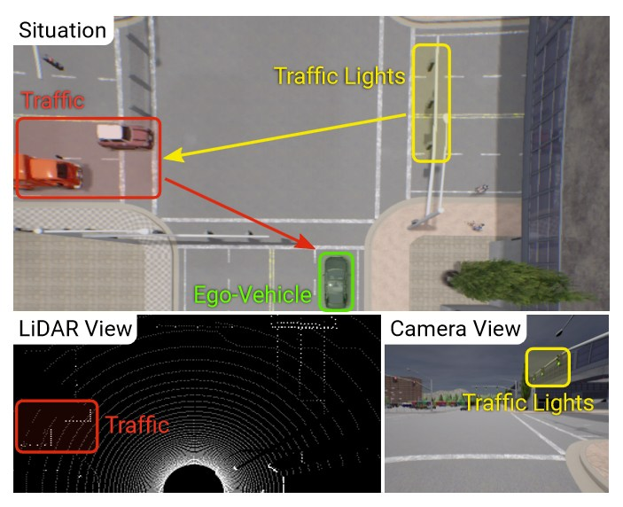
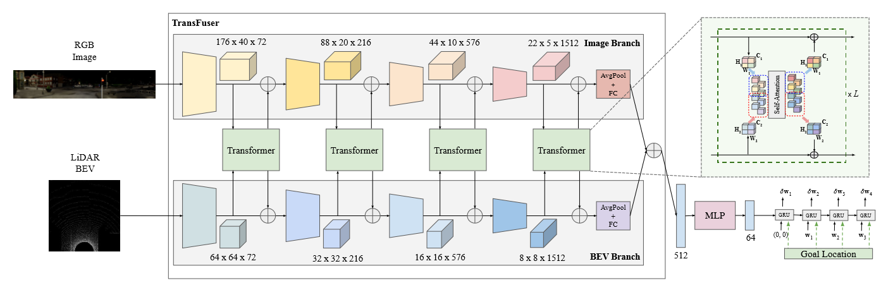
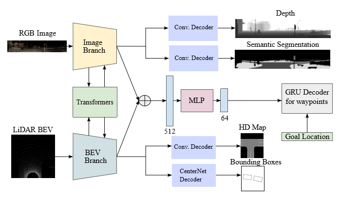
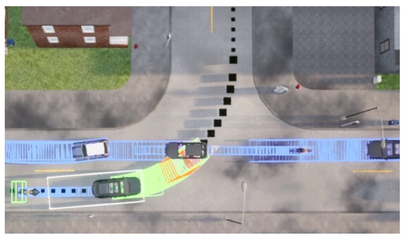
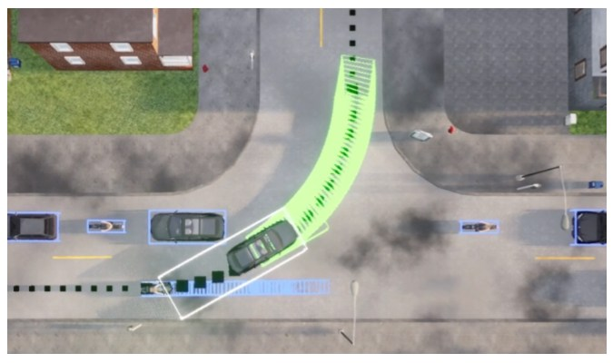
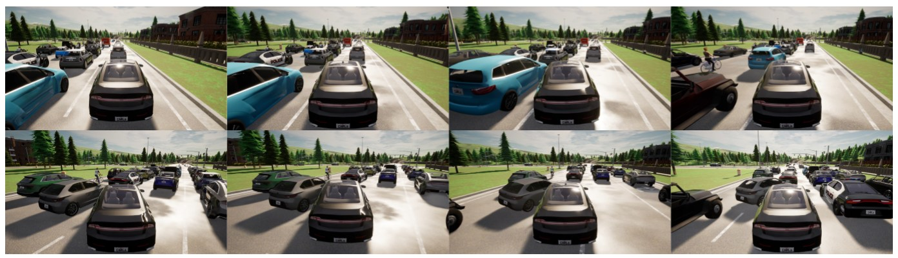
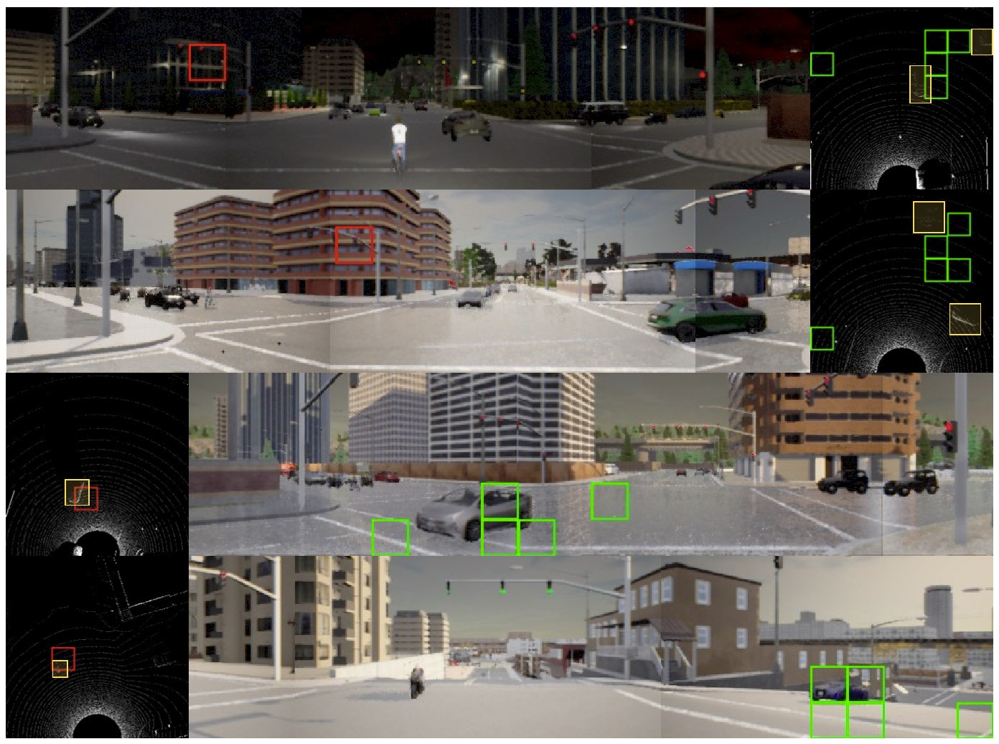
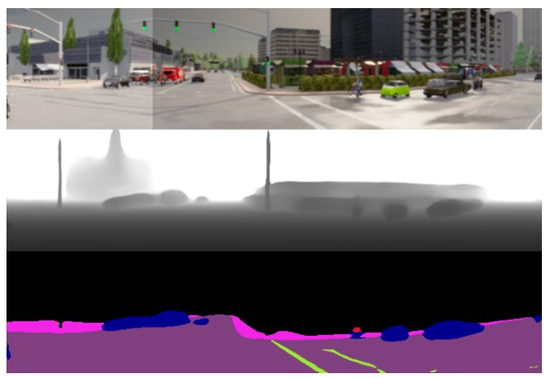
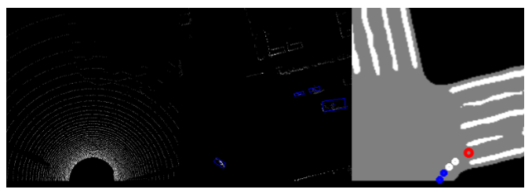

目次
TransFuser: Imitation with Transformer-Based Sensor Fusion for Autonomous Driving
Kashyap Chitta、Aditya Prakash、Bernhard Jaeger、Zehao Yu、Katrin Renz、Andreas Geiger
University of Tübingen（Autonomous Vision Group）・Max Planck Institute for Intelligent Systems, Tübingen、University of Illinois Urbana-Champaign
arXiv:2205.15997v1 [cs.CV]、2022年5月31日
翻訳について：原文 PDF は
16_TransFuser_2205.15997.pdf（全 18 ページ）。本文、図の説明、図中ラベル、表、脚注、付録を訳出し、論文タイトルと参考文献は原文のまま掲載。図は原図を掲載し、英語ラベルの日本語訳を併記した。数式・数値・引用番号・コードの識別子は原文を維持。原文の記述に関する補足は「訳注」と明示し、本文と区別している。
要旨
自動運転において、相補的なセンサからの表現をどのように統合すべきだろうか。幾何ベースの融合は、知覚（例：物体検出、動き予測）において有望な結果を示してきた。しかし end-to-end 運転の文脈では、既存のセンサ融合手法に基づく模倣学習は、動的エージェントが高密度に存在する複雑な運転シナリオにおいて性能が劣ることを我々は見出した。そこで我々は、自己注意を用いて画像と LiDAR の表現を統合する機構である TransFuser を提案する。本手法は複数の解像度で Transformer モジュールを用い、透視ビューと鳥瞰図（bird's eye view）の特徴マップを融合する。長いルートと高密度の交通を含む新たな難しいベンチマーク、および CARLA 都市運転シミュレータの公式リーダーボードにおいて、その有効性を実験的に検証する。投稿時点で、TransFuser は CARLA リーダーボードにおいて運転スコアで既存のすべての手法を大差で上回っている。幾何ベースの融合と比較して、TransFuser は 1 km あたりの平均衝突回数を 48% 削減する。
索引語：自動運転、模倣学習、センサ融合、Transformer、注意機構。
1 はじめに
LiDAR センサは自動運転車に正確な 3D 情報を提供する。LiDAR ベースの手法は最近 end-to-end 運転で目覚ましい成果を示しているが［1］–［4］、それらは LiDAR からは得られない特権情報へのアクセスを前提とした設定で評価されている。これにはテスト時の HD マップや信号機状態の真値へのアクセスが含まれる。実際には、LiDAR に欠けている情報は、RGB カメラなど車両上の他のセンサから復元しなければならない［5］–［13］。
ここから重要な問いが生じる。自動運転において相補的な利点を活かすために、これら 2 つのモダリティからの表現を統合できるだろうか。異なるモダリティをどの程度独立に処理すべきであり、性能向上を最大化するためにどのような融合機構を用いるべきだろうか。センサ融合分野の先行研究は主に運転の知覚面、例えば 2D および 3D 物体検出［14］–［23］、動き予測［14］、［17］、［24］–［31］、深度推定［21］、［22］、［32］、［33］に焦点を当ててきた。これらの手法は、3D シーンの幾何情報と意味情報を捉える状態表現の学習に注力している。これらは主に、画像空間とさまざまな LiDAR 投影空間、例えば鳥瞰図（BEV）［14］–［22］やレンジビュー（RV）［14］、［17］、［23］、［30］、［34］、［35］との間の幾何的な特徴投影に基づいて動作する。情報は典型的には、投影された 2D または 3D 空間における各特徴の周囲の局所近傍から集約される。

図1：概念図。左から対向交通が来る交差点を考える。交差点を安全に通過するために、エージェント（緑）は、信号機（黄）と交差交通（赤）との相互作用を含むシーンの大域的文脈を捉えなければならない。我々の TransFuser モデルは、注意機構を介して複数のモダリティにわたる幾何情報と意味情報を統合して大域的文脈を捉え、CARLA における安全な運転挙動につなげる。
図中ラベル：Situation＝状況、Traffic＝交通（他車両）、Traffic Lights＝信号機、Ego-Vehicle＝自車両、LiDAR View＝LiDAR ビュー、Camera View＝カメラビュー
我々は、これらのアーキテクチャ設計における局所性の仮定が、複雑な都市シナリオでの性能を妨げることを観察した（表1）。例えば、複数車線の交差点で交通に対処する際、自車両は近くの動的エージェントと、より遠くにある信号機との相互作用を考慮する必要がある。深層畳み込みネットワークは単一モダリティ内で大域的文脈を捉えるのに使えるが、それを複数モダリティに拡張したり、特徴の対の間の相互作用をモデル化したりするのは自明ではない。これらの限界を克服するために、我々は Transformer の注意機構［36］、［37］を用いて、3D シーンについての大域的な文脈推論を、異なるモダリティの特徴抽出層に直接かつ密に統合する。我々は画像と LiDAR の入力を、互いに相補的であることから対象とし、これらのモダリティ間での表現の統合に焦点を当てる（図1）。入力は 2 つの独立した畳み込みエンコーダの分岐で処理され、それらは Transformer によって相互に接続される（図2）。得られたモデルを TransFuser と呼び、end-to-end 運転のために設計された自己回帰的なウェイポイント予測の枠組みに組み込む。
本手法の利点を示すため、我々は CARLA 運転シミュレータ［5］を用いて包括的な研究を行う。既存の閉ループ運転ベンチマーク（例：NoCrash ベンチマーク［38］、NEAT ルート［39］）よりも難しい評価設定を、新しい CARLA バージョン 0.9.10 のリーダーボード［40］に基づいて検討する。我々が提案する Longest6 ベンチマークは、約 1.5km の長いルート、増加した交通密度、および難しい事故前（pre-crash）交通シナリオを含む。これらの課題に取り組むため、我々はマルチタスク学習の設定において補助教師信号を組み込み、TransFuser といくつかの強力なベースラインを訓練する。提案ベンチマークと CARLA 公式リーダーボードの非公開ルートの両方において、TransFuser は先行研究よりも著しく高い運転スコアを達成する。
我々の貢献は以下のようにまとめられる。
- 既存のセンサ融合アプローチに基づく模倣学習方策が、高密度交通を伴う難しいシナリオに対処できないことを示す、CARLA における新たな評価設定を設計する。
- 異なる入力モダリティの特徴抽出層に、大域的文脈と対ごとの相互作用を組み込むための、新しいマルチモーダル融合 Transformer（TransFuser）を提案する。
- 提案した評価設定と CARLA 公式リーダーボードの両方において、TransFuser による最先端の運転性能を示す詳細な実証分析を行う。我々の分析は知見を提供するとともに、end-to-end 運転モデルの現在の限界を探る。
本ジャーナル論文は、CVPR 2021 で発表した会議論文［41］の拡張である。我々は［41］の TransFuser モデルを強化し、（1）データ収集のための改良されたエキスパート実演者、（2）複数カメラによって視野を拡大した新しいセンサ構成、（3）改良された視覚バックボーンアーキテクチャ、（4）マルチタスク学習を含む更新された訓練手順、を取り入れることで最先端の性能を達成した。また、CARLA で広く使われるベースラインを大きく上回る新しい画像のみのベースライン Latent TransFuser も提供する。更新したコード、データセット、学習済みモデルは https://github.com/autonomousvision/transfuser で公開している。
2 関連研究
マルチモーダル自動運転：end-to-end 運転のための最近のマルチモーダル手法［35］、［42］–［45］は、RGB 画像を深度や意味情報で補完することが運転性能を向上させる可能性を持つことを示してきた。Xiao ら［42］は、カメラと深度のモダリティの早期・中間・後期融合という観点から RGBD 入力を検討し、大きな性能向上を観察している。Behl ら［43］と Zhou ら［44］は、運転のための明示的な中間表現として意味情報と深度が有効であることを示している。Natan ら［45］は 2D の意味情報と深度を組み合わせて、end-to-end 運転のための意味付き点群を作る。本研究では、シーンの表現という点で互いに相補的であり、自動運転システムで容易に利用できることから、画像と LiDAR の入力に焦点を当てる。この点で、Sobh ら［35］は LiDAR と画像のモダリティに対して後期融合アーキテクチャを利用しており、各入力は別々のストリームで符号化され、最終的な特徴ベクトルが連結される。Chen ら［46］の同時期の研究は、RGB 画像から抽出した意味クラス情報を LiDAR 点群に連結する PointPainting［47］によってセンサ融合を行う。我々は、Sobh ら［35］の後期融合機構は違反率が高く、PointPainting ベースのシステムはいくつかのベースラインと比べてルート完走率が低下することを観察した（表1）。これらの限界を緩和するため、我々は、注意機構を用いて特徴符号化の複数段階で異なるモダリティからの情報を統合するのに有効なマルチモーダル融合 Transformer（TransFuser）を提案する。TransFuser は、センサ間で異なる空間位置からの情報を融合する必要がある 3D シーンの大域的文脈を捉えるのに役立つ。
物体検出と動き予測のためのセンサ融合手法：センサ融合の研究の大半は知覚タスク、例えば物体検出［14］–［16］、［18］–［23］、［47］–［60］や動き予測［24］–［30］、［49］、［61］、［62］を扱っている。これらはマルチビューの LiDAR、例えば鳥瞰図（BEV）やレンジビュー（RV）上で動作するか、あるいはカメラ入力を LiDAR からの深度情報で補完する。これは典型的には、LiDAR 特徴を画像空間に投影するか、画像特徴を BEV または RV 空間に投影することで実現される。我々に最も近いアプローチは ContFuse［20］であり、画像と LiDAR BEV 特徴の間でマルチスケールの密な特徴融合を行う。LiDAR BEV 表現の各ピクセルについて、3D 空間の局所近傍における最近傍点を計算し、それらの近傍点を画像空間に投影して対応する画像特徴を取得し、連続畳み込み（continuous convolution）を用いてこれらの特徴を集約し、LiDAR BEV 特徴と結合する。我々の研究と同時期に、EPNET++［63］と CAT-Det［64］も、3D 物体検出のための強化された特徴表現を学習するために、注意機構を用いて画像と LiDAR 点群の間でマルチスケールの双方向融合を行っている。他の投影ベースの融合手法も同様の傾向をたどり、2D または 3D 空間の局所近傍から情報を集約する。しかし、これらの手法で学習される状態表現は、高密度交通での安全な操縦に重要な 3D シーンの大域的文脈を捉えないため不十分である。これを示すため、我々は［20］、［22］に着想を得て、画像から LiDAR への融合と LiDAR から画像への融合の両方を含むマルチスケールの幾何ベース融合機構を end-to-end 運転用に実装し、高密度の都市環境において高い違反率を観察した（表1）。
自動運転のための注意機構：注意機構は運転の文脈において、車線変更［65］、物体検出［31］、［66］–［68］、動き予測［31］、［69］–［77］、運転者の注意予測［78］、［79］、そして最近では end-to-end 運転［39］、［41］について検討されてきた。Chen ら［66］は、車両制御を予測するために、学習された意味マップ上で再帰的な注意機構を用いている。Li ら［31］は、Transformer モジュールを再帰型ニューラルネットワークに組み込むことで、アクター間の時間的・空間的依存関係を捉えるために注意機構を利用している。SA-NMP［75］は、LiDAR BEV 投影と HD マップ上で動作する 2D CNN から抽出された特徴に対して注意マスクを学習し、安全な動作計画のために動的エージェントに注目する。Chen ら［65］は、TORCS シミュレータにおける車線変更のため、周囲の車両に注目するよう、階層的な深層強化学習の枠組みで空間的・時間的注意を利用している。PYVA［80］は、透視ビューから BEV への画像変換を行うために注意機構を用いる。このアイデアは、画像入力からの BEV セマンティックセグメンテーションに関する同時期のいくつかの論文［81］–［85］でも採用されている。NEAT［39］は、中間的な注意マップを用いて、高次元の 2D 画像特徴を運転のためのコンパクトな BEV 表現へと反復的に圧縮する。NEAT と比べると、我々の注意機構はテスト時に注意の反復的な精緻化を必要としないため、より単純である。また NEAT とは異なり、我々は注意機構を複数の特徴解像度で適用し、ネットワーク内の浅い特徴と深い特徴の両方についてセンサ融合を可能にしている。さらに、既存の注意ベースの運転アプローチはいずれも複数のセンサモダリティを考慮していない。我々の研究は、画像と LiDAR 特徴の密な融合のために Transformer の自己注意機構を用いる。
3 TransFuser
本研究では、end-to-end 運転のための新しいアーキテクチャを提案する（図2）。これは 2 つの主要な構成要素からなる。（1）複数のセンサモダリティ（画像と LiDAR）からの情報を統合するためのマルチモーダル融合 Transformer、および（2）自己回帰的なウェイポイント予測ネットワークである。以下の節では、問題設定、入力と出力のパラメータ化、およびモデルの各構成要素を詳述する。
3.1 問題設定
我々は都市環境における地点間ナビゲーション（point-to-point navigation）のタスク［1］、［2］、［38］、［86］、［87］を考える。その目標は、他の動的エージェントに安全に反応し交通規則に従いながら、与えられたルートを完走することである。
模倣学習（IL）：IL の目標は、エキスパート \(\pi^*\) の挙動を模倣する方策 \(\pi\) を学習することである。我々の設定では、方策とは入力からウェイポイントへの写像であり、ウェイポイントは別個の低レベル制御器に与えられて行動が出力される。我々は、教師あり学習手法である IL の行動クローニング（BC）アプローチを考える。まずエキスパート方策を環境内で実行して、サイズ \(Z\) のデータセット \(\mathcal{D} = \{(\mathcal{X}^i, \mathcal{W}^i)\}_{i=1}^{Z}\) を収集する。これは環境の高次元観測 \(\mathcal{X}\) と、対応するエキスパート軌道、すなわち BEV 空間における 2D ウェイポイントの集合 \(\mathcal{W} = \{\mathbf{w}_t = (x_t, y_t)\}_{t=1}^{T}\) から構成される。この BEV 空間は自車両の座標系を用いる。方策 \(\pi\) は、収集したデータ \(\mathcal{D}\) を用いて損失関数 \(\mathcal{L}\) により教師ありで訓練される。
\[ \underset{\pi}{\operatorname{argmin}} \; \mathbb{E}_{(\mathcal{X},\mathcal{W})\sim\mathcal{D}} \left[ \mathcal{L}(\mathcal{W}, \pi(\mathcal{X})) \right] \tag{1} \]
高次元観測 \(\mathcal{X}\) は、単一時刻の前方カメラ画像入力と LiDAR 点群を含む。IL による自動運転に関する先行研究が、観測履歴を用いても性能向上につながらない可能性を示していることから［88］–［92］、我々は単一時刻の入力を用いる。\(\mathcal{L}\) としては、予測軌道 \(\pi(\mathcal{X})\) とエキスパート軌道 \(\mathcal{W}\) の間の \(L_1\) 距離を主損失関数として用いる。さらに、性能を高めるためにいくつかの補助損失を用いる。これらは 3.6 節で詳述する。我々は、PID 制御器 \(\mathbb{I}\) として実装された逆動力学モデル［93］へのアクセスを仮定する。これは将来の軌道 \(\mathcal{W}\) が与えられたときに低レベル制御、すなわち操舵・スロットル・ブレーキを行う。行動は \(\mathbf{a} = \mathbb{I}(\mathcal{W})\) として決定される。
大域プランナ：我々は CARLA 0.9.10 の標準プロトコルに従い、高レベルの目標位置 \(\mathcal{G}\) が GPS 座標として与えられると仮定する。これらの目標位置は疎であり、方策 \(\pi\) が予測する局所的なウェイポイントとは対照的に、数百メートル離れていることもある点に注意されたい。
3.2 入力と出力のパラメータ化
入力表現：先行する LiDAR ベースの運転アプローチ［2］、［86］に従い、LiDAR 点群を固定解像度の 2D BEV グリッド上の 2 ビンのヒストグラムに変換する。自車両の前方 32m、左右それぞれ 16m 以内の点を考慮し、32m × 32m の BEV グリッドを対象とする。グリッドを 0.125m × 0.125m のブロックに分割し、256 × 256 ピクセルの解像度を得る。ヒストグラムについては、高さ方向を、地面上・地面以下の点と地面より上の点をそれぞれ表す 2 つのビンに離散化する。また、2D の目標位置を LiDAR 点群と同じ 256 × 256 の BEV 空間にラスタライズし、このチャネルを 2 つのヒストグラムビンに連結する。これにより、サイズ 256 × 256 ピクセルの 3 チャネル疑似画像が得られる。目標位置を BEV で表現するのは、透視画像領域と比べてウェイポイント予測との相関が高いためである［87］。
RGB 入力には 3 台のカメラ（前方、左 60°、右 60° を向く）を用いる。各カメラの水平 FOV は 120° である。画像を 960 × 480 ピクセルの解像度で取得し、端部の放射歪みを除くために 320 × 160 に切り出す。これら 3 枚の歪みのない画像を合成して、エンコーダへの単一の画像入力とし、その解像度は 704 × 160 ピクセル、FOV は 132° である。この FOV は、CARLA のすべての公開タウンにおいて近くと遠くの信号機の両方を観測するのに十分であることを確認している。
出力表現：自車両の現在の座標系を中心とする BEV 空間において、自車両の将来の軌道 \(\mathcal{W}\) を予測する。軌道は 2D ウェイポイントの系列 \(\{\mathbf{w}_t = (x_t, y_t)\}_{t=1}^{T}\) で表される。我々は \(T = 4\) を用いる。これは我々の逆動力学モデルが必要とするデフォルトのウェイポイント数である。
3.3 マルチモーダル融合 Transformer
我々の主要なアイデアは、画像と LiDAR のモダリティが相補的であることを踏まえ、Transformer の自己注意機構［36］を利用してそれらの大域的文脈を取り込むことである。Transformer アーキテクチャは、それぞれが特徴ベクトルで表される離散トークンからなる系列を入力とする。特徴ベクトルには、空間的な帰納バイアスを取り込むための位置エンコーディングが付加される。

図2：アーキテクチャ。RGB 画像と LiDAR BEV の表現（3.2 節）を、両モダリティ間の中間特徴マップの融合に複数の Transformer モジュールを用いるマルチモーダル融合 Transformer（TransFuser）への入力とする。この融合は特徴抽出器全体を通じて複数の解像度で適用され、画像ストリームと LiDAR BEV ストリームの双方から 512 次元の特徴ベクトルが出力され、それらは要素ごとの和によって結合される。この 512 次元特徴ベクトルは、3D シーンの大域的文脈を符号化した環境のコンパクトな表現を構成する。これは MLP で処理された後、自己回帰的なウェイポイント予測ネットワークに渡される。我々は 1 層の GRU と、それに続いて隠れ状態を受け取り自車両の差分ウェイポイント \(\{\delta\mathbf{w}_t\}_{t=1}^{T}\) を予測する線形層を用いる。差分ウェイポイントは自車両の現在の座標系で表される。
図中ラベル：RGB Image＝RGB 画像、LiDAR BEV＝LiDAR 鳥瞰図、Image Branch＝画像分岐、BEV Branch＝BEV 分岐、AvgPool + FC＝平均プーリング＋全結合層、Self-Attention＝自己注意、Goal Location＝目標位置
形式的には、入力系列を \(\mathbf{F}^{in} \in \mathbb{R}^{N \times D_f}\) と表す。ここで \(N\) は系列中のトークン数であり、各トークンは次元 \(D_f\) の特徴ベクトルで表される。Transformer は線形射影を用いてクエリ、キー、バリューの集合（\(\mathbf{Q}\)、\(\mathbf{K}\)、\(\mathbf{V}\)）を計算する。
\[ \mathbf{Q} = \mathbf{F}^{in}\mathbf{M}^{q}, \;\; \mathbf{K} = \mathbf{F}^{in}\mathbf{M}^{k}, \;\; \mathbf{V} = \mathbf{F}^{in}\mathbf{M}^{v} \tag{2} \]
ここで \(\mathbf{M}^{q} \in \mathbb{R}^{D_f \times D_q}\)、\(\mathbf{M}^{k} \in \mathbb{R}^{D_f \times D_k}\)、\(\mathbf{M}^{v} \in \mathbb{R}^{D_f \times D_v}\) は重み行列である。\(\mathbf{Q}\) と \(\mathbf{K}\) のスケール化内積を用いて注意重みを計算し、各クエリについてバリューを集約する。
\[ \mathbf{A} = \operatorname{softmax}\left( \frac{\mathbf{Q}\mathbf{K}^{T}}{\sqrt{D_k}} \right) \mathbf{V} \tag{3} \]
最後に、Transformer は非線形変換を用いて、入力特徴 \(\mathbf{F}^{in}\) と同じ形状の出力特徴 \(\mathbf{F}^{out}\) を計算する。
\[ \mathbf{F}^{out} = \operatorname{MLP}(\mathbf{A}) + \mathbf{F}^{in} \tag{4} \]
Transformer はアーキテクチャ全体で注意機構を複数回適用し、\(L\) 層の注意層となる。標準的な Transformer の各層は複数の並列な注意「ヘッド」を持ち、式（2）で各 \(\mathbf{F}^{in}\) について複数の \(\mathbf{Q}\)、\(\mathbf{K}\)、\(\mathbf{V}\) を生成し、式（3）から得られる \(\mathbf{A}\) の値を連結する。
NLP におけるトークン入力構造とは異なり、我々はグリッド構造の特徴マップ上で動作する。画像への Transformer の適用に関する先行研究［94］–［97］と同様に、各モダリティの中間特徴マップを空間グリッドではなく集合とみなし、集合の各要素をトークンとして扱う。画像と LiDAR BEV 入力に対する畳み込み特徴抽出器は、異なる層でシーンの異なる側面を符号化する。そのため、我々はエンコーダ全体を通じて、これらの特徴を複数のスケールで融合する（図2）。
\(s\) で添字付けられる単一モダリティの中間的なグリッド構造特徴マップを、次元 \(H_s \times W_s \times C\) の 3D テンソルとする。\(S\) 個の異なるモダリティについて、これらの特徴を積み重ねて次元 \(\sum_{s=1}^{S}(H_s * W_s) \times C\) の系列を形成する。学習可能な位置埋め込みを加える。これは積み重ねた系列と同じ次元を持つ訓練可能なパラメータであり、訓練時にネットワークが異なるトークン間の空間的依存関係を推論できるようにする。入力系列と位置埋め込みを要素ごとの和で結合し、次元 \(\sum_{s=1}^{S}(H_s * W_s) \times C\) のテンソルを形成する。図2 に示すように、このテンソルは Transformer に入力され、同じ次元の出力が得られる。図2 では見やすさのため、位置埋め込みと速度埋め込みの入力を省略している。出力はそれぞれ次元 \(H_s \times W_s \times C\) の \(S\) 個の特徴マップに整形し直され、既存の特徴マップとの要素ごとの和によって個々のモダリティ分岐へと戻される。以上で述べた機構が単一スケールでの特徴融合を構成する。この融合は、画像分岐と BEV 分岐の特徴抽出器全体を通じて、異なる解像度で複数回適用される（図2）。しかし、高い空間解像度で特徴マップを処理するのは計算コストが高い。そこで、初期のエンコーダブロックからの高解像度特徴マップを、平均プーリングによって最終特徴マップと同じ解像度にダウンサンプリングしてから Transformer に入力する。出力は、既存の特徴マップとの要素ごとの和の前に、双線形補間によって元の解像度にアップサンプリングする。
複数の解像度で密な特徴融合を行った後（図2）、画像分岐の特徴抽出器からは次元 \(22 \times 5 \times C\) の特徴マップが、BEV 分岐からは \(8 \times 8 \times C\) の特徴マップが得られる。ここで \(C\) は特徴抽出器の現在の解像度におけるチャネル数であり、\(\{72, 216, 576, 1512\}\) のいずれかをとる。これらの特徴マップは平均プーリングによって 512 次元に削減され、続いて 512 ユニットの全結合層に通される。画像ストリームと LiDAR BEV ストリームの双方から得られた次元 512 の特徴ベクトルは、その後、要素ごとの和によって結合される。この 512 次元の特徴ベクトルは、3D シーンの大域的文脈を符号化した環境のコンパクトな表現を構成する。これが次に述べるウェイポイント予測ネットワークに入力される。
3.4 ウェイポイント予測ネットワーク
図2 に示すように、512 次元の特徴ベクトルを MLP（256 ユニットと 128 ユニットの 2 つの隠れ層からなる）に通して、計算効率のために次元を 64 に削減してから、GRU［98］で実装された自己回帰的なウェイポイントネットワークに渡す。GRU の隠れ状態は 64 次元の特徴ベクトルで初期化する。GRU の更新ゲートは、隠れ状態に符号化された情報の出力および次の時刻への流れを制御する。GRU は現在位置と目標位置（3.1 節）も入力として受け取り、これによりネットワークは次のウェイポイントを予測する際に隠れ状態内の関連する文脈に注目できる。目標位置の GPS 座標（自車両の座標系に位置合わせしたもの）は、ウェイポイント予測により直接的に影響を与えうるため、エンコーダに加えて GRU にも入力として与える。［2］に従い、1 層の GRU と、それに続く線形層を用いる。線形層は隠れ状態を受け取り、自車両の現在の座標系における \(T = 4\) 個の将来時刻に対する自車両の差分ウェイポイント \(\{\delta\mathbf{w}_t\}_{t=1}^{T}\) を予測する。したがって、予測される将来のウェイポイントは \(\{\mathbf{w}_t = \mathbf{w}_{t-1} + \delta\mathbf{w}_t\}_{t=1}^{T}\) で与えられる。BEV 空間は自車両の位置を中心としているため、最初の GRU ユニットへの入力は (0,0) とする。
3.5 制御器
予測されたウェイポイント \(\{\mathbf{w}_t\}_{t=1}^{T}\) から操舵・スロットル・ブレーキの値を得るために、横方向制御と縦方向制御の 2 つの PID 制御器を用いる。縦方向制御器は連続する時刻のウェイポイント間のベクトルの加重平均の大きさを入力とし、横方向制御器はその向きを入力とする。PID 制御器については、［87］の著者提供のコードベースと同じ設定を用いる。制御器に関する追加の詳細は補足資料にある。
クリーピング（Creeping）：車が長時間（55 秒。赤信号での想定待ち時間より長くなるよう選んだ）動いていない場合、短時間（1.5 秒）PID 制御器の目標速度を 4 m/s に設定して前方にじわじわ進ませる（creep）。このクリーピング挙動は、自動運転の IL で観察される慣性問題（inertia problem）［38］から回復するために用いられる。車両が停止しているとき、訓練データではその場に留まり続ける確率（例：高密度交通において）が非常に高い。これにより、訓練されたエージェントが一度停止した後に二度と走り出さなくなることがある。
安全ヒューリスティック：クリーピング挙動だけでは、例えばエージェントが渋滞で動けず、前進すると衝突につながりうる状況などで危険である。これを防ぐため、車の前方の小さな矩形領域に LiDAR の反射点がある場合にはクリーピング挙動を上書きする安全チェックを実装する。このヒューリスティックはクリーピング中には不可欠だが、安全性を高めるために通常走行中にも適用できる［99］。クリーピング中と通常走行中の両方で大域的な安全ヒューリスティックを適用する影響を 4.11 節で調べる。

図3：補助損失関数。ウェイポイント損失（式（5））に加えて、4 つの補助タスクを組み込む。画像分岐からの深度予測とセマンティックセグメンテーション、BEV 分岐からの HD マップ予測と車両検出である。
図中ラベル：RGB Image＝RGB 画像、Image Branch＝画像分岐、BEV Branch＝BEV 分岐、Conv. Decoder＝畳み込みデコーダ、CenterNet Decoder＝CenterNet デコーダ、Depth＝深度、Semantic Segmentation＝セマンティックセグメンテーション、HD Map＝HD マップ、Bounding Boxes＝バウンディングボックス、GRU Decoder for waypoints＝ウェイポイント用 GRU デコーダ、Goal Location＝目標位置
3.6 損失関数
［87］に従い、予測ウェイポイントと（エキスパートによる）真値ウェイポイントとの間の \(L_1\) 損失を用いてネットワークを訓練する。いずれも現在の座標系に位置合わせされている。時刻 \(t\) の真値ウェイポイントを \(\mathbf{w}_t^{gt}\) とすると、損失関数は次式で与えられる。
\[ \mathcal{L} = \sum_{t=1}^{T} \|\mathbf{w}_t - \mathbf{w}_t^{gt}\|_1 \tag{5} \]
訓練時にのみ利用可能な真値ウェイポイント \(\{\mathbf{w}_t^{gt}\}\) は、訓練時とテスト時の両方で与えられる疎な目標位置 \(\mathcal{G}\) とは異なることに注意されたい。
補助タスク：自動運転で遭遇する複雑な時空間的シーン構造を考慮するため、IL ベースの運転エージェントで用いられる訓練目的は補助タスクを取り込む形で発展してきた。シーンの再構成を目的とした訓練信号が一般的になっており、例えば画像の自己符号化［100］、2D セマンティックセグメンテーション［101］、鳥瞰図（BEV）セマンティックセグメンテーション［102］、2D 意味予測［103］、BEV 意味予測［3］、［39］などがある。補助タスクを行うことで、より解釈可能で頑健なモデルにつながることが示されている［3］、［39］。本研究では、深度予測、セマンティックセグメンテーション、HD マップ予測、車両検出の 4 つの補助タスクを考える（図3）。
2D の深度と意味情報：2D 深度推定と 2D セマンティックセグメンテーションを補助タスクとして組み合わせることは、画像ベースの end-to-end 運転において有効なアプローチとなっている［39］、［104］。画像分岐の特徴から深度と意味情報を復号するために、［39］の AIM-MT ベースラインと同じデコーダアーキテクチャを用いる。深度出力は \(L_1\) 損失で、意味情報は交差エントロピー損失で教師付けする。［39］に従い、7 つの意味クラスを考える。（1）ラベルなし、（2）車両、（3）道路、（4）赤信号、（5）歩行者、（6）車線標示、（7）歩道である。
HD マップ：道路、車線標示、その他のクラスを含む 3 チャネルの BEV セグメンテーションマスクを予測する。これにより、中間特徴が走行可能領域と走行不可能領域に関する情報を符号化するよう促される。マップは LiDAR 入力と同じ座標系を用いるため、畳み込みデコーダによって LiDAR 分岐の特徴マップから得られる。ただし、計算効率のため、HD マップをダウンサンプリングしたもの（256 × 256 ではなく 64 × 64）を予測する。HD マップ予測タスクは交差エントロピー損失を用いる。
バウンディングボックス：CenterNet デコーダ［105］を用いたキーポイント推定によって、シーン内の他車両の位置を特定する。具体的には、畳み込みデコーダを用いて BEV 特徴から位置マップ \(\hat{\mathbf{P}} \in [0,1]^{64 \times 64}\) を予測する。HD マップ予測タスクと同様に、車両検出のために 256 × 256 の入力をより小さな 64 × 64 の予測に写像する。このタスクの 2D ターゲットラベルは、訓練データセットの各物体中心にガウスカーネルを置いて描画する。向きは単一のスカラー値であるが、既存の 3D 検出器［105］–［107］で観察されているように、この値を直接回帰するのは難しい。そのため、我々の CenterNet 実装は、初めに粗い向きを予測し、次に細かいオフセット角を予測する 2 段階のアプローチをとる。粗い向きを予測するため、各真値車両の相対ヨー角を 30° 幅の 12 ビンに離散化し、［107］と同様に、各ピクセルにおける 12 チャネルの分類ラベル \(\hat{\mathbf{O}} \in [0,1]^{64 \times 64 \times 12}\) によってこのクラスを予測する。最後に、回帰マップ \(\hat{\mathbf{R}} \in \mathbb{R}^{64 \times 64 \times 5}\) を予測する。この回帰マップは 3 つの回帰ターゲット、すなわち車両サイズ（\(\in \mathbb{R}^2\)）、位置オフセット（\(\in \mathbb{R}^2\)）、向きオフセット（\(\in \mathbb{R}\)）を保持する。位置オフセットは、入力より低い解像度で位置マップを予測することで生じる量子化誤差を補うために用いられる。向きオフセットは向きの離散化誤差を補正する［107］。\(\hat{\mathbf{O}}\) と \(\hat{\mathbf{R}}\) の予測については、車両中心のある位置のみが教師付けされることに注意されたい。位置マップ、向きマップ、回帰マップはそれぞれ focal loss［108］、交差エントロピー損失、\(L_1\) 損失を用いる。
3.7 Latent TransFuser
CILRS［38］は、旧 CARLA バージョン 0.8.4 で広く用いられている画像のみのベースラインである。これは離散的なナビゲーションコマンド（車線追従、左／右への車線変更、左折／右折）を条件として、視覚特徴から（ウェイポイントではなく）車両制御を直接予測するよう学習する。しかし［39］で示されているように、このアプローチは難しい CARLA リーダーボードで低い結果しか得られない。それにもかかわらず、CARLA における画像ベース運転に関する最近の研究は、CILRS を主要な IL ベースラインとして用いつつ、IL からより複雑な強化学習（RL）ベースの訓練へと移行している［109］、［110］。今後の研究にとってより意味のある IL ベースラインを提供するため、ここで本手法の画像のみ版である Latent TransFuser を導入する。
Latent TransFuser は、我々のアーキテクチャへの 2 チャネルの LiDAR BEV ヒストグラム入力を、同一次元（256 × 256 × 2）の 2 チャネルの位置エンコーディングで置き換える。2D 位置エンコーディングは -1 から 1 までの等間隔の値を持つグリッドであり、1 チャネルが左右軸、もう 1 チャネルが上下軸に対応する。この変更以外は、アーキテクチャ、訓練手順、補助損失は LiDAR ベースの TransFuser と同一である。加えて、我々の制御器はクリーピング中の安全ヒューリスティックに LiDAR 入力を用いる（3.5 節）。Latent TransFuser では、代わりに車の前方の小さな矩形安全領域と、補助的な CenterNet 検出ヘッドで検出された物体との交差を確認する。そのような交差が生じるたびにクリーピングは無効化される。
Latent TransFuser の位置エンコーディング入力は、BEV LiDAR の代理として機能する。LiDAR 分岐は BEV 座標系にある HD マップとバウンディングボックスを予測するよう教師付けされるため、この分岐の潜在特徴と画像特徴を融合することは、透視ビューから BEV への注意ベースの射影として機能する。このアーキテクチャは、NEAT［39］や PYVA［80］といった既存の注意ベースのカメラから BEV への射影手法と類似点を持つ。しかしこれらの手法とは異なり、Latent TransFuser は複数の特徴解像度で特徴を射影する。実験で示すように、Latent TransFuser は強力なベースラインであり、画像のみの入力設定において、CARLA リーダーボード上ではるかに複雑な RL ベースの手法を上回る（表3）。
4 実験
本節では、実験設定を述べ、TransFuser の運転性能をいくつかのベースラインと比較し、TransFuser の注意マップを可視化し、本アプローチの各構成要素の重要性を明らかにするアブレーション研究を示す。
4.1 タスク
高速道路、市街地、住宅地など多様な地域において、事前に定義されたルートの集合に沿ってナビゲーションを行うタスクを考える。ルートは、大域プランナが与える GPS 座標の疎な目標位置の系列によって定義される。各ルートは事前に定義された位置で初期化される複数のシナリオからなり、障害物回避、交差点での保護されていない右左折（unprotected turn）、赤信号無視の車両、遮蔽領域からランダムな位置で道路を横断するために現れる歩行者など、さまざまな種類の敵対的状況にエージェントが対処できる能力を試す。エージェントは、交通規則に従い、高密度の動的エージェントに対処しながら、指定された制限時間内にルートを完走する必要がある。
4.2 訓練データセット
訓練とテストには CARLA［5］シミュレータ、具体的には一般公開されている 8 つのタウンからなる CARLA 0.9.10 を用いる。訓練には 8 つのタウンすべてを用いる。データセットは訓練ルートの集合に沿って収集する。平均長 100m の交差点を通る約 2500 ルートと、平均長 400m のカーブした幹線道路に沿う約 1000 ルートである。訓練データの生成には、シミュレーションからの特権情報を用いて走行するよう設計されたエキスパート方策を実行し、2FPS でデータを保存する。エキスパートは CARLA のトラフィックマネージャのオートパイロット1に類似したルールベースのアルゴリズムである。訓練データセットは合計 228k フレームを含む。以下では、エキスパートアルゴリズムについてさらに詳しく述べる。
脚注1：https://carla.readthedocs.io/en/latest/adv_traffic_manager/

（a）エキスパートが走行すると軌道予測が衝突を予測するため、エキスパートは曲がる前に待機する。

（b）対向車が通過した後、エキスパートは交差点を横断する。
図4：保護されていない左折を行うエキスパート。道路上の黒いボックスは、エキスパートが従うべき経路を示す。自転車モデル（bicycle model）による予測は、エキスパートについては緑、他のすべての車両については青で色付けされている。赤いバウンディングボックスは予測された衝突を示す。車の周囲の白いボックスは、道路上に配置された信号機のトリガーボックス（例：図4a の左下）を検出するために用いられる。
4.3 エキスパート
訓練データを生成するため、シミュレータからの特権情報を用いて走行するよう設計されたエキスパート方策を実行する。エキスパートのウェイポイントは模倣損失の真値ラベルとなるため、エキスパートは自動ラベリングアルゴリズムとみなすことができる。補助タスクの真値ラベルはシミュレータから与えられる。我々は［87］の著者が提供したコードを基に構築する。このアプローチは単純な手作りのルールに基づいている。RL でエキスパートを構築することも可能であるが［111］、［112］、計算負荷が高く解釈性も低い。我々のエキスパート方策は、A* プランナと、それに続く 2 つの PID 制御器（横方向制御と縦方向制御用）からなる。横方向と縦方向の制御タスクは独立に扱われる。
横方向制御は、A* プランナが生成した経路に追従することで行う。具体的には、少なくとも 3.5 メートル先にあるルート上の次のウェイポイントに対する車の角度を、PID 制御器を用いて最小化する。縦方向制御はモデル予測制御の一種を用いて行い、3 つの目標速度を区別する。標準の目標速度は 4.0 m/s である。エキスパートが交差点内にいるときは、目標速度を 3.0 m/s に下げる。最後に、違反が予測された場合は目標速度を 0.0 m/s に設定して車両を停止させる。赤信号違反は、CARLA が提供するトリガーボックスとの交差判定を行うことで予測する。衝突違反は、すべての交通参加者の向き付きバウンディングボックスを予測することで予測する。予測は 50 ms の離散ステップで、交差点内では 4 秒間、その他の領域では 1 秒間行う。予測には［110］の事前学習済み運動学的自転車モデルを用いる。この自転車モデルは、車の現在の位置・向き・速度と適用された制御が与えられたときに、離散時間ステップ後の位置・向き・速度を予測できる単純な数理モデルである。時刻 \(t\) での出力を時刻 \(t+1\) の入力として自転車モデルを反復的に展開することで、すべての車両を予測する。他の交通参加者の制御入力は現在時刻のもの（シミュレータが提供）しか分からないため、将来の時刻でも同じ制御を適用し続けると仮定する。自車両については、ルートに追従しようとする PID 制御器を用いて将来の操舵とスロットルを計算する。自車両のブレーキ制御は常に 0 に設定する。これは、ブレーキをかけなかった場合に衝突が起こるかという反実仮想的な問いに答えたいからである。歩行者も同様に予測するが、速度と加速度を持つ点としてモデル化する。CARLA の歩行者の移動パターンは単純なので、これはうまく機能する。将来の時刻 t における自車両のバウンディングボックスと、将来の時刻 t における他の交通参加者のバウンディングボックスが交差する場合に、衝突違反が検出される。上述の行動反復型予測機構によくある失敗は、後方からエキスパートに接近する高速な車が、衝突する前に最終的には減速することを予期しない点である。誤検出を避けるため、車両の前半分のみをバウンディングボックスとして用いることで追突は考慮しない。縦方向制御器には \(K_p = 5.0, K_i = 0.5, K_d = 1.0\) を、横方向制御器には \(K_p = 1.25, K_i = 0.75, K_d = 0.3\) を設定する。両制御器とも、積分項を移動平均として近似するためにサイズ 40 のバッファを用いる。保護されていない左折を行うエキスパートの例を図4 に示す。
4.4 Longest6 ベンチマーク
CARLA シミュレータは、100 の非公開ルートからなる公式の評価リーダーボードを提供している。しかし、このプラットフォームを利用するチームは月あたり 200 時間の評価時間に制限されている。1 回の評価に 100 時間以上かかるため、公式リーダーボードはアブレーション研究や、各モデルの複数回の評価を含む詳細な統計の取得には適さない。そこで我々は、公式リーダーボードといくつかの類似点を持ちつつ、計算予算の制限なしにローカルの計算資源で評価に利用できる Longest6 ベンチマークを提案する。
CARLA リーダーボードのリポジトリは、エージェントの訓練と評価の出発点として 76 ルートの集合を提供している。これらのルートは元々 2019 年の CARLA チャレンジとともに公開されたものである。これらは 6 つのタウンにまたがり、それぞれがウェイポイントの系列で定義されている。しかし、タウンごとのルート数には大きな不均衡があり、例えば Town03 と Town04 にはそれぞれ 20 ルートがあるが、Town02 には 6 ルートしかない。Longest6 運転ベンチマークを利用可能なすべてのタウンにわたって均衡させるため、76 ルートの集合からタウンごとに最も長い 6 ルートを選ぶ。これにより平均ルート長 1.5km の 36 ルートが得られ、これは公式リーダーボードの平均ルート長（1.7km）に近い。公式リーダーボードに動機づけられ、Longest6 ベンチマークについてさらに 3 つの設計上の選択を行う。（1）評価中、CARLA シミュレータが許すすべての生成可能地点に車両を生成することで、動的エージェントの高い密度を確保する。（2）［39］に従い、各ルートは、6 つの天候条件（Cloudy、Wet、MidRain、WetCloudy、HardRain、SoftRain）のうち 1 つと 6 つの日照条件（Night、Twilight、Dawn、Morning、Noon、Sunset）のうち 1 つを組み合わせて得られる固有の環境条件を持つ。（3）ルート沿いの事前定義された位置で生成される CARLA の敵対的シナリオを評価に含める。具体的には、NHTSA の事故前類型（pre-crash typology）2に基づいて生成される CARLA のシナリオ 1、3、4、7、8、9、10 を含める。Longest6 ベンチマークのルートの可視化は補足資料に示す。
4.5 評価指標
各エージェントの運転挙動を包括的に理解するため、いくつかの指標を報告する。
（1）ルート完走率（RC）：ルート \(i\) においてエージェントが完走したルート距離の割合 \(R_i\) を、\(N\) 本のルートにわたって平均したもの。ただし、エージェントがルートのある割合でルートの車線外を走行した場合、RC には乗数（1 − ルート外距離の割合）が掛けられて減じられる。
\[ \text{RC} = \frac{1}{N} \sum_{i}^{N} R_i \tag{6} \]
（2）違反スコア（IS）：ルート中にエージェントが犯した違反 \(j\) の各事例に対する違反ペナルティ係数 \(p^j\) の幾何級数。エージェントは理想的な基本スコア 1.0 から始まり、違反のたびにペナルティ係数が掛けられて減少する。
\[ \text{IS} = \prod_{j}^{\text{Ped,Veh,Stat,Red}} (p^j)^{\#\,\text{infractions}^j} \tag{7} \]
各違反のペナルティ係数は事前に定められており、歩行者との衝突は 0.50、車両との衝突は 0.60、静的構造物との衝突は 0.65、赤信号違反は 0.7 に設定されている。CARLA の公式リーダーボードでは一時停止標識違反のペナルティにも言及している。しかし、我々の提出物のいずれにも一時停止標識違反がないことを確認した。そのため、この違反は分析から除外する。
（3）運転スコア（DS）：ルート完走率を違反乗数 \(P_i\) で重み付けした平均。
\[ \text{DS} = \frac{1}{N} \sum_{i}^{N} R_i P_i \tag{8} \]
（4）1 km あたりの違反数：考慮する違反は、歩行者・車両・静的要素との衝突、赤信号無視、オフロード違反、ルート逸脱、タイムアウト、車両のブロック（停止して動けなくなること）である。違反の総数を、走行した総 km 数で正規化して報告する。
\[ \text{Infractions per km} = \frac{\sum_{i}^{N} \#\,\text{infractions}_i}{\sum_{i}^{N} k_i} \tag{9} \]
ここで \(k_i\) はルート \(i\) の走行距離（km）である。オフロード違反は少し異なる。違反の総数の代わりに、オフロードで走行した km 数の合計を用いる。この指標は百分率なので 100 を掛ける。
4.6 ベースライン
我々の TransFuser モデルをいくつかのベースラインと比較する。（1）WOR［110］：動的計画法で得た Q 関数で運転タスクを教師付けする多段階の訓練アプローチである。これは CARLA バージョン 0.9.10 のより簡単な NoCrash ベンチマーク［38］における現在の最先端手法である。このアプローチの評価には著者提供の事前学習済みモデルを用いる。（2）Latent TransFuser：LiDAR 入力の重要性を調べるため、3.7 節で述べたように、TransFuser と同じアーキテクチャを持ちつつ BEV LiDAR の代わりに固定の位置エンコーディング画像を入力として用いる自己回帰的ウェイポイント予測ネットワークを実装する。（3）LAV［46］：PointPainting［47］によってセンサ融合を行う同時期のアプローチである。PointPainting は RGB 画像から抽出した意味クラス情報を LiDAR 点群に連結するもので、これを用いて、シーン内のすべての近傍車両の軌道を予測する特権的な動作プランナを訓練する。この特権プランナはその後、生のセンサ入力のみから走行する方策へと蒸留される。実験には著者が公開しているチェックポイント3を用いる。この公開チェックポイントは、LAV のリーダーボード登録に用いられたモデルと完全に同一ではないことに注意されたい。（4）Late Fusion：画像と LiDAR の特徴を TransFuser と同じエンコーダで独立に抽出するが、Transformer は用いない（［35］と同様の）版のアーキテクチャを実装する。各分岐からの特徴は要素ごとの和によって融合され、ウェイポイント予測ネットワークに渡される。（5）Geometric Fusion：［20］、［22］に着想を得た、画像から LiDAR への特徴融合と LiDAR から画像への特徴融合の両方を含むマルチスケールの幾何ベース融合手法を実装する。LiDAR BEV 表現の各 0.125m × 0.125m ブロックを 3D 空間に逆投影し、3D セルを得る。この 3D セル内にある LiDAR 点群から 5 点をランダムに選び、画像空間に投影する。次に、これらの点の画像特徴を要素ごとの和によって集約してから 3 層 MLP に渡す。MLP の出力は、特徴抽出器全体を通じて複数の解像度で、対応する 0.125m × 0.125m ブロックの LiDAR BEV 特徴と結合される。同様に、各画像ピクセルについて、複数の解像度で LiDAR BEV 特徴から情報を集約する。このベースラインは、我々のアーキテクチャの Transformer を投影ベースの特徴融合に置き換えたものと等価である。また、訓練データの生成に用いたエキスパートの結果も報告する。これは Longest6 評価設定における性能の上限を定めるものである。ベースラインに関する追加の詳細は補足資料に示す。
| 手法 | DS ↑ | RC ↑ | IS ↑ | Ped ↓ | Veh ↓ | Stat ↓ | Red ↓ | OR ↓ | Dev ↓ | TO ↓ | Block ↓ |
|---|---|---|---|---|---|---|---|---|---|---|---|
| WOR ［110］ | 20.53 ± 3.12 | 48.47 ± 3.86 | 0.56 ± 0.03 | 0.18 | 1.05 | 0.37 | 1.28 | 0.47 | 0.88 | 0.08 | 0.20 |
| Latent TransFuser (Ours) | 37.31 ± 5.35 | 95.18 ± 0.45 | 0.38 ± 0.05 | 0.03 | 3.66 | 0.18 | 0.13 | 0.04 | 0.00 | 0.12 | 0.05 |
| LAV ［46］ | 32.74 ± 1.45 | 70.36 ± 3.14 | 0.51 ± 0.02 | 0.16 | 0.83 | 0.15 | 0.96 | 0.42 | 0.06 | 0.12 | 0.45 |
| Late Fusion (LF) | 22.47 ± 3.71 | 83.30 ± 3.04 | 0.27 ± 0.04 | 0.05 | 4.63 | 0.28 | 0.11 | 0.48 | 0.02 | 0.11 | 0.21 |
| Geometric Fusion (GF) | 27.32 ± 0.80 | 91.13 ± 0.95 | 0.30 ± 0.01 | 0.06 | 4.64 | 0.17 | 0.13 | 0.48 | 0.00 | 0.05 | 0.11 |
| TransFuser (Ours) | 47.30 ± 5.72 | 93.38 ± 1.20 | 0.50 ± 0.06 | 0.03 | 2.45 | 0.07 | 0.16 | 0.04 | 0.00 | 0.06 | 0.10 |
| Expert（エキスパート） | 76.91 ± 2.23 | 88.67 ± 0.56 | 0.86 ± 0.03 | 0.02 | 0.28 | 0.01 | 0.03 | 0.00 | 0.00 | 0.08 | 0.13 |
表1：Longest6 ベンチマークの結果。我々の TransFuser モデルを、運転性能と発生した違反の観点からいくつかのベースラインと比較する。Longest6 評価設定における各モデルの 3 回の評価実行の指標を報告する。主要指標（DS：運転スコア、RC：ルート完走率、IS：違反スコア）については平均と標準偏差を示す。残りの 1 km あたりの違反数の指標（Ped：歩行者との衝突、Veh：車両との衝突、Stat：静的構造物との衝突、Red：赤信号違反、OR：オフロード走行、Dev：ルート逸脱、TO：タイムアウト、Block：車両のブロック）については平均のみを示す。TransFuser は大差で最良の DS を得ている。
4.7 実装の詳細
2 つのセンサモダリティ、すなわち前方向きのカメラと、BEV 表現に変換された LiDAR 点群（3.2 節）を用いる。つまり \(S = 2\) である。カメラ入力は単一の画像に連結され、ImageNet［114］で事前学習された RegNetY-3.2GF［113］を用いて符号化される。事前学習済みモデルは［115］のものを用いる。LiDAR BEV 表現は、スクラッチから訓練するもう 1 つの RegNetY-3.2GF［113］を用いて符号化される。［87］と同様に、センサ入力を ±20° でランダムに回転させ、その回転に応じてウェイポイントラベルを調整することで、訓練データに対して角度方向の視点拡張を行う。解像度ごとに 1 つの Transformer を用い、各 Transformer には 4 つの注意ヘッドを用いる。4 つの Transformer について、各解像度における特徴埋め込み次元 \(D_f\) に対応して、\(D_q, D_k, D_v\) を \(\{72, 216, 576, 1512\}\) から選ぶ。モデルは 4 台の RTX 2080Ti GPU で 41 エポック、初期学習率 \(10^{-4}\)、バッチサイズ 12 で訓練する。エポック 30 と 40 の後に学習率を 1/10 に下げる。［39］の検証ルート上で、1 つのシードについてエポック 31、33、35、37、39、41 を閉ループで評価し、運転スコアが最も高いエポックを選ぶ。すべてのモデルについて、Adam の変種である AdamW オプティマイザ［116］を用いる。重み減衰は 0.01 に設定し、Adam のベータ値は PyTorch のデフォルトである 0.9 と 0.999 とする。
4.8 Longest6 ベンチマークの結果
まず、新しい Longest6 評価設定において CARLA 上での運転性能を分析する（表1）。各実験結果について、CARLA シミュレータの非決定性を考慮して評価を 3 回繰り返す。さらに、模倣ベースの手法は、訓練シードによるランダム初期化とデータサンプリングの変化に応じて性能にばらつきを示すのが一般的である［41］、［43］。異なる訓練実行間で観察される分散を考慮するため、各手法について 3 つの異なるランダムシードを用い、これら 3 つの訓練実行のアンサンブルについて指標を報告する。
強力なベースラインとしての Latent TransFuser：最初の実験では、画像ベースの手法の性能を調べる。表1 の結果から、WOR は Longest6 評価設定で性能が低いことが分かる。特に、WOR は他の手法よりもはるかに多くのルート逸脱（Dev）を伴い、RC が低いことが観察される。一方、Latent Transfuser は表1 で最良の RC を得ており、ルート逸脱はゼロである。これはおそらく、Latent TransFuser が低レベル制御に我々の逆動力学モデル（PID 制御器）を用い、ウェイポイントが予測されるのと同じ BEV 座標空間で目標位置を表現しているためである。対照的に、WOR は運転者の意図をモデルに伝えるために粗いナビゲーションコマンド（例：車線追従、左折／右折、車線変更）を用い、離散的な行動空間から出力行動を選択する。この結果は、自己回帰的なウェイポイント予測を含む TransFuser アーキテクチャが、LiDAR センサがない場合でも end-to-end 運転タスクの強力なベースラインであることを示している。

図5：車線変更の失敗。TransFuser は高密度交通での車線変更に失敗し、こうした状況が生じるルートでは連続的に多数の衝突を起こす。上段と下段に 2 つの例を示す。時間は左から右へ進む。
センサ融合手法：この実験の目的は、運転性能に対する LiDAR モダリティの影響を明らかにし、異なる融合手法を比較することである。このため、TransFuser を 3 つのベースライン、LAV、Late Fusion（LF）、Geometric Fusion（GF）と比較する。LAV は DS の点で TransFuser より劣る。主な差は 23% 低い RC から生じている。考えられる理由としては、オフロード違反の多さが示すような操舵の悪さや、ブロック違反の多さの原因となりうるモジュール型構成要素における誤検出が挙げられる。LAV は TransFuser と同程度の IS を得ているが、さらに調べると、LAV が優れているのは車両との衝突回避の点だけであり、他のすべての違反については TransFuser のほうが優れていることが分かる。Longest6 ベンチマークには、車両が多車線の幹線道路上の高密度交通の中を走行しなければならないルートがいくつかあることに注意されたい。TransFuser はこうした状況で合流に失敗し、多数の車両衝突（\(\gt\)20）を起こし、車両衝突の指標に大きく影響している。驚くべきことに、LF と GF は画像のみの Latent TransFuser ベースラインよりも性能が劣ることが観察される（表1）。GF のマルチスケールの幾何ベース融合エンコーダは LF と比べていくらかの改善をもたらすが、LF と GF はいずれも IS が低い。これは、交差点を安全に通過するために必要な大域的な文脈推論を取り込んでおらず、障害物を無視して何としても目標へ到達することに主眼を置いてしまい、それが複数の違反につながるためであると我々は仮説を立てる。対照的に、我々の TransFuser モデルは GF と比べて DS で 19.98% の絶対的な改善を得ている。また、1 km あたりの衝突数（Ped+Veh+Stat）において LF と比べて 48.59%、GF と比べて 47.64% の削減を達成し、IS では 0.2 以上の絶対的な改善を得ている。これらの結果は、注意機構が 3D シーンの大域的文脈を取り込むのに有効であり、より安全な運転を可能にすることを示している。
限界：RC が高いすべての手法が車両との衝突（Veh）に苦戦していることが観察される。我々の評価設定では交通密度が CARLA で許される最大密度に設定されているため、衝突の回避は非常に難しい。特に、TransFuser は 1 km あたりの車両衝突がエキスパートの約 9 倍である。図5 に示すように、これらの衝突は主に保護されていない右左折と車線変更の際に生じることが観察される。
実行時間：単一の RTX 3090 GPU 上で、1 つの評価ルートのすべての時刻について平均することで各手法の実行時間を測定する。考慮する実行時間には、センサデータの前処理、モデル推論、PID 制御が含まれる。結果を表2 に示す。我々のアーキテクチャの Transformer は、LF ベースラインに対して実行時間を単一モデルで 17%、3 モデルのアンサンブルで 28% 増加させることが観察される。しかし、単一の TransFuser モデルはこのハードウェア上でなおリアルタイムに実行できる。GF ベースラインは、より単純な融合機構であるにもかかわらず、画像と LiDAR のトークン間の対応を見つけるのに余分な時間がかかるため、TransFuser よりも遅い。
| 手法 | 単一モデル | アンサンブル (3) |
|---|---|---|
| Late Fusion (LF) | 23.5 | 46.7 |
| Geometric Fusion (GF) | 43.5 | 69.1 |
| TransFuser (Ours) | 27.6 | 59.6 |
表2：実行時間。各手法のフレームあたりの実行時間（ms）を、1 つの評価ルートのすべての時刻について平均して示す。単一モデルと 3 モデルのアンサンブルの両方について実行時間を測定する。単一の TransFuser モデルは RTX 3090 GPU 上でリアルタイムに動作する。
4.9 リーダーボードの結果
本研究のモデルを、100 の評価ルートからなる非公開セットを含む CARLA 自動運転リーダーボードに提出し、結果を表3 に報告する。LiDAR 入力を用いないモデルの中では、Latent TransFuser が最良の性能を達成している。その DS は 45.20 であり、次に良い画像ベースの手法 GRIAD［117］よりも 10 ポイント近く高い。GRIAD は［109］で提示された強化学習（RL）手法を基に構築されている。このアプローチでは、まずエンコーダを訓練して、2D の意味情報と、シーンの信号機の状態や車両と車線の相対的な位置・向きといった特定のアフォーダンスの両方を予測させる。次にエンコーダを凍結し、エキスパートの実演で一部が満たされたリプレイバッファを用いて、価値関数ベースの RL 手法を訓練するのに用いる。GRIAD は訓練に CARLA シミュレータから 45M サンプルを必要とする［117］のに対し、我々の訓練データセットは 228k フレームしかない（GRIAD の 200 分の 1）。
| 手法 | LiDAR? | DS ↑ | RC ↑ | IS ↑ |
|---|---|---|---|---|
| NEAT ［39］ | - | 21.83 | 41.71 | 0.65 |
| MaRLn ［109］ | - | 24.98 | 46.97 | 0.52 |
| WOR ［110］ | - | 31.37 | 57.65 | 0.56 |
| GRIAD ［117］ | - | 36.79 | 61.86 | 0.60 |
| Latent TransFuser (Ours) | - | 45.20 | 66.31 | 0.72 |
| Late Fusion (LF) | ✓ | 26.07 | 64.67 | 0.47 |
| Geometric Fusion (GF) | ✓ | 41.70 | 87.85 | 0.47 |
| TransFuser (Ours) | ✓ | 61.18 | 86.69 | 0.71 |
| LAV* ［46］ | ✓ | 61.85 | 94.46 | 0.64 |
表3：CARLA リーダーボードでの評価。公式評価サーバの 100 の非公開ルートにおける DS、RC、IS を報告する。Latent TransFuser と TransFuser は、既存手法と比べて IS を大きく改善している。*LAV のリーダーボード登録には、表1 の公開チェックポイントとは異なる更新されたモデルが用いられている。
LiDAR ベースのベースラインについては、Longest6 での知見と同様に、GF が LF より良い性能を示す。TransFuser によって大域的な注意を取り込むことで、さらなる改善と最先端の IS が得られる。LAV は TransFuser と同程度の性能を示すが、DS でわずかに上回る（+0.67）にすぎず、これはおそらく評価の分散の範囲内である。このわずかな改善を得るために、LAV は複数の事前学習済みモジュール型構成要素と教師–生徒蒸留の枠組みを伴う多段階の訓練を採用している。対照的に、TransFuser は単純な単一段階の IL 訓練手順で最先端の結果を達成している。さらなる改善のために、TransFuser の訓練手順は、能動学習（Active Learning）［118］–［120］、DAgger［121］、［122］、敵対的シミュレーション［123］–［125］、RL ベースのファインチューニング［100］、教師–生徒蒸留［46］、［87］、［110］、［126］など、自動運転に関する先行研究で用いられた手法と組み合わせられる可能性がある。

図6：注意マップ。赤のクエリトークンについて、注意が向けられた上位 5 トークンを緑で示し、LiDAR 点群中の車両の存在を黄で強調する。上 2 行：画像から LiDAR、下 2 行：LiDAR から画像。TransFuser は交差点において車両や信号機の近くの領域に注意を向ける。
| ヘッド | T1 | T2 | T3 | T4 | ||||
|---|---|---|---|---|---|---|---|---|
| It | Lt | It | Lt | It | Lt | It | Lt | |
| 1 | 100.00 | 0.00 | 99.83 | 0.00 | 44.55 | 98.69 | 77.79 | 89.97 |
| 2 | 100.00 | 0.00 | 99.99 | 0.00 | 07.58 | 98.98 | 80.05 | 95.91 |
| 3 | 100.00 | 0.00 | 39.71 | 0.00 | 27.73 | 98.09 | 90.08 | 99.98 |
| 4 | 99.99 | 1.45 | 99.99 | 0.26 | 99.99 | 99.98 | 80.13 | 99.47 |
表4：モダリティ間注意の統計。4 つの Transformer（T1、T2、T3、T4）の各ヘッドについて、注意が向けられた上位 5 トークンのうち少なくとも 1 つがもう一方のモダリティに属するトークン（It：画像トークン、Lt：LiDAR トークン）の割合（%）を報告する。
4.10 注意の統計と可視化
我々のアーキテクチャ（図2）は 4 つの Transformer からなり、各 Transformer は 4 つの注意層と 4 つの注意ヘッドを持つ。本節では、各 Transformer の各ヘッドについて、最終注意層からの注意マップを可視化する。Transformer は 110 個の画像特徴トークンと 64 個の LiDAR 特徴トークンを入力とし、各トークンは入力モダリティにおける 32 × 32 のパッチに対応する。Town03 と Town05 の交差点シナリオを考え、画像特徴マップの 2 行目、3 行目、4 行目にある 66 トークンと、LiDAR 特徴マップの 4 行目、5 行目、6 行目にある 24 トークンについて、上位 5 つの注意重みを調べる。これらのトークンを選ぶのは、入力モダリティにおいて交差点領域に対応し、信号機や車両を含むからである。
画像と LiDAR の特徴トークンについて、モダリティ間注意の統計を計算する。具体的には、4 つの Transformer（T1、T2、T3、T4）の各ヘッドについて、注意が向けられた上位 5 トークンのうち少なくとも 1 つがもう一方のモダリティに属するトークンの割合（%）を表4 に報告する。初期の Transformer では LiDAR から画像への注意がほとんど無視できるほど小さいのに対し、後段の Transformer ではほぼすべての LiDAR トークンが画像特徴から情報を集約していることが観察される。さらに、各 Transformer の異なるヘッドも特徴的な振る舞いを示す。例えば、T2 のヘッド 3 は他のヘッドに比べて画像トークンのモダリティ間注意が著しく少なく、T3 のヘッド 2 はモダリティ間注意が非常に少ない一方で、ヘッド 4 は他のヘッドに比べて画像トークンのモダリティ間注意が著しく多い。全体として、T4 は画像トークンと LiDAR トークンの両方について広範なモダリティ間注意を示しており、これは TransFuser が 2 つのモダリティ間で情報を集約するのに有効であることを示している。
図6 に T4 のモダリティ間注意の可視化を 4 つ示す。注意マップには共通の傾向が観察される。TransFuser は、画像と LiDAR の特徴マップでやや異なる位置ではあるものの、交差点において車両や信号機の近くの領域に注意を向ける。すべての Transformer についての追加の可視化は補足資料に示す。
4.11 大域的な安全ヒューリスティック
3.5 節で述べた安全ヒューリスティックの主な動機は、適用したクリーピング挙動の間の衝突を防ぐことである。そのため、表1 と表3 では安全ヒューリスティックをクリーピング中にのみ適用している。しかし、ルールベースのフォールバックシステムは IL モデルの安全性を向上させることが示されている［99］。この実験では、3.5 節で述べた安全ヒューリスティックを大域的に、すなわちクリーピング中と通常走行中の両方で適用した場合の影響を調べる。Longest6 ベンチマークと CARLA リーダーボードの両方について結果を示す。この分析の計算コストを減らすため、表1 と表3 で用いた 3 つの異なる訓練実行のアンサンブルではなく、単一のモデルを評価する。ただし、明確さのためにアンサンブルのスコアも報告する。加えて、Latent TransFuser について示す結果は予備実験によるものであり、そこでは LiDAR センサを含めて、3.7 節で述べた CenterNet ベースの交差判定の代わりに LiDAR ベースの安全ヒューリスティックを用いているため、表1 と表3 の数値とはわずかな差がある。
| 手法 | アンサンブル? | 安全ヒューリスティック | Longest6 | リーダーボード | ||||
|---|---|---|---|---|---|---|---|---|
| DS ↑ | RC ↑ | IS ↑ | DS ↑ | RC ↑ | IS ↑ | |||
| Latent TransFuser | - | Global（大域） | 50.00 ± 1.13 | 90.38 ± 3.32 | 0.56 ± 0.02 | 47.05 | 71.66 | 0.72 |
| - | Creep Only（クリーピング時のみ） | 42.19 ± 5.49 | 94.84 ± 1.40 | 0.44 ± 0.06 | 42.36 | 86.67 | 0.51 | |
| ✓ | Creep Only（クリーピング時のみ） | 36.18 ± 5.36 | 95.34 ± 2.20 | 0.37 ± 0.05 | 45.03 | 75.37 | 0.62 | |
| TransFuser | - | Global（大域） | 49.49 ± 8.63 | 90.67 ± 4.78 | 0.55 ± 0.09 | 41.93 | 58.55 | 0.77 |
| - | Creep Only（クリーピング時のみ） | 42.51 ± 2.49 | 91.01 ± 0.83 | 0.46 ± 0.02 | 50.57 | 73.84 | 0.68 | |
| ✓ | Creep Only（クリーピング時のみ） | 47.30 ± 5.72 | 93.38 ± 1.20 | 0.50 ± 0.06 | 61.18 | 86.69 | 0.71 | |
表5：大域的な安全ヒューリスティックの影響。このヒューリスティックは Latent TransFuser に対して一貫した小さな改善をもたらす。TransFuser については、ヒューリスティックは Longest6 のスコアを改善するが、CARLA リーダーボードでの性能を低下させる。
結果を表5 に示す。Latent TransFuser については、大域的な安全ヒューリスティックは、クリーピング中のみに適用した場合と比べて、Longest6 ベンチマークで 8 ポイント、リーダーボードで 5 ポイント DS を改善することが観察される。これは特に IS の大幅な改善（例：リーダーボードで 0.51 から 0.72）によるものである。興味深いことに、TransFuser では異なる傾向が観察される。大域的な安全ヒューリスティックは、ハイパーパラメータ（すなわち矩形の安全ボックスのサイズ）を調整した Longest6 ベンチマークでは DS を 7 ポイント改善する。しかし、リーダーボードでは DS が 10 ポイント近く低下する。大域的な安全ヒューリスティックは、CARLA リーダーボードにおいて両手法ともルート完走率の低下を招く。これは、このヒューリスティックが既知のマップではうまく機能するが、未知でおそらく未見の道路レイアウトには汎化しないことを示している。Latent TransFuser よりもすでに高い違反スコアを持っていた TransFuser では、IS の改善が RC の低下を補えず、安全ヒューリスティックによって全体として DS が低下する。
単一モデルと対応するアンサンブルの結果を比較すると、アンサンブルはリーダーボードにおいて Latent TransFuser と TransFuser の両方の DS を改善し、特に TransFuser では 10 ポイント以上改善することが分かる。Longest6 のルートでは、アンサンブルの影響は TransFuser で 5 ポイントと小さく、Latent TransFuser ではむしろ性能が低下する。表5 で報告した単一モデルは、3 つの訓練シードのうち最初のものである（表6）。アンサンブルが TransFuser により大きな正の影響を与えるのは、そのモデルの訓練時の分散が大きかったためかもしれない。これについては以下で議論する。
| 訓練 | 評価 | LTF | LF | GF | TF |
|---|---|---|---|---|---|
| 1 | 1 | 48.82 | 31.94 | 46.13 | 59.45 |
| 2 | 50.12 | 33.29 | 43.62 | 44.15 | |
| 3 | 51.07 | 34.79 | 39.42 | 44.87 | |
| avg. | 50.00 | 33.34 | 43.06 | 49.49 | |
| 2 | 1 | 44.53 | 37.05 | 36.64 | 51.50 |
| 2 | 54.35 | 36.79 | 39.40 | 50.91 | |
| 3 | 52.57 | 47.98 | 34.93 | 52.35 | |
| avg. | 50.48 | 40.60 | 36.99 | 51.59 | |
| 3 | 1 | 51.15 | 34.90 | 49.77 | 59.76 |
| 2 | 48.10 | 32.47 | 45.64 | 57.39 | |
| 3 | 49.80 | 44.98 | 52.47 | 52.88 | |
| avg. | 49.68 | 37.45 | 49.30 | 56.68 |
表6：訓練と評価の分散。Longest6 ベンチマークにおける各評価の DS を示す。各ベースラインを 3 回訓練し、訓練した個々のモデルについて 3 回の評価実行を行う。LTF：Latent TransFuser、LF：Late Fusion、GF：Geometric Fusion、TF：TransFuser。すべてのモデルがスコアに大きな分散を示す。
訓練シードの分散：訓練シードと評価シードの分散の影響を表6 に示す。各ベースラインを 3 回訓練し、大域的な安全ヒューリスティックを有効にした状態で、Longest6 のルート上で各モデルを 3 回評価する。個々のモデルについて、最良のスコアと最悪のスコアが 10〜15 ポイント異なりうることが観察され、極めて大きな分散につながっている。特に TransFuser の最初のシードでは、DS は 44.15 から 59.45 の範囲にわたる。Geometric Fusion では、平均 DS が最悪と最良の訓練シードの間で 12 ポイント異なる。この程度の分散は、異なるアプローチを分析または比較しようとする際に問題となる。表6 で報告した分散は 2 つの要因から生じていることを強調したい。異なるシード間の訓練の分散は、最適化中のネットワークの初期化、データサンプリング、データ拡張の違いから生じる。評価の分散は、CARLA 0.9.10 のトラフィックマネージャ、物理、センサノイズの変動の結果である。観察された結果に基づくと、評価におけるランダム性が分散の主な原因であり、訓練シードの分散は副次的であるが、両要因とも無視できない。CARLA における最先端手法の既存の慣行は、単一の訓練シードについて複数回の評価を実行することで評価の分散のみを報告するというものである。これは早計な結論につながりうる（例：最初の訓練シードの 3 回の評価だけを考えると、Latent TransFuser が TransFuser を上回る）。（これらの知見を踏まえ）我々は、今後の研究では、最良シードまたはアンサンブルの結果に加えて、ベースラインと提案する新手法の両方について訓練シードを変えた結果を報告すべきであると主張する。
| 補助損失 | DS ↑ | RC ↑ | IS ↑ |
|---|---|---|---|
| None（なし） | 44.29 | 78.17 | 0.58 |
| No Depth（深度なし） | 56.23 | 91.80 | 0.61 |
| No Semantics（意味情報なし） | 53.76 | 88.40 | 0.61 |
| No HD Map（HD マップなし） | 50.96 | 89.52 | 0.58 |
| No Vehicle Detection（車両検出なし） | 53.43 | 88.49 | 0.60 |
| All Losses (Worst Seed)（全損失・最悪シード） | 49.49 | 90.67 | 0.55 |
| All Losses (Best Seed)（全損失・最良シード） | 56.68 | 92.28 | 0.62 |
表7：補助タスク。示した結果は Longest6 での 3 回の評価の平均である。補助損失なしで訓練すると、RC と DS が大きく低下する。
4.12 アブレーション研究
次に、Longest6 ベンチマーク上の一連のアブレーション研究で、TransFuser のいくつかの設計上の選択を分析する。大域的な安全ヒューリスティックは Longest6 のルートにおいて TransFuser に一貫した大きな改善をもたらすため（表5）、アブレーション研究ではこの設定を用いる。各実験について評価を 3 回繰り返すが、これらの結果には、表1 のような 3 つの異なる訓練実行のアンサンブルではなく、単一の訓練実行を用いる。計算コストをさらに減らすため、予備実験で通常は最良エポックに近い性能であることが観察されたエポック 31 を常に評価する。デフォルト構成については 3 つの訓練実行が利用可能である。訓練によるランダム性を考慮するため、最良と最悪の訓練シードを報告する。この区間内に収まるアブレーションは、おそらく大きな影響を持たない。
補助タスク：3.6 節で述べたように、本研究では 4 つの補助タスクを考える。表7 に、これらの補助損失をすべて取り除いた場合の TransFuser の性能と、各損失を個別に取り除いた場合の影響を示す。補助タスクがない場合、RC が 92.28 から 78.17 へと急激に低下することが観察される。単一の補助タスクのみを取り除いても大きな影響はない。すべての結果は、運転スコアの点でデフォルト構成の最良シードと最悪シードの間の範囲内にある。図7 に、4 つの補助損失すべてで訓練した TransFuser による予測を可視化する。

（a）上から下へ：画像入力、予測された深度、予測された意味情報（凡例：none（なし）、road（道路）、lane（車線）、sidewalk（歩道）、vehicle（車両）、person（人））。

（b）左から右へ：LiDAR の地面チャネル、LiDAR の障害物チャネル（地面より上の点）に重ねたバウンディングボックス予測、HD マップ予測。
図7：補助タスクの可視化。同一の運転シーンについて、画像分岐と LiDAR 分岐の両方の入力と出力を可視化する。さらに、入力の目標点を HD マップ予測上に赤い円で、予測ウェイポイントを青と白の円で可視化する。最初の 2 つのウェイポイント（PID 制御器の操舵角を得るのに用いられる）は青い円で、残りの 2 つのウェイポイントは白い円で示す。
アーキテクチャ：表8 で、TransFuser のエンコーダアーキテクチャを変化させた影響を分析する。融合 Transformer から畳み込みバックボーンへの残差出力接続を選択的に取り除くことで、両方向の融合の重要性を調べる。Camera → LiDAR 方向のみ、または LiDAR → Camera 方向のみの融合は、双方向融合のデフォルトモデルよりもわずかに低い性能となる。エンコーダの初期ブロックにおける融合機構を取り除き、最も深い 1、2、3 スケールでのみ特徴融合を行う場合も、性能がわずかに低下する。融合 Transformer については、2〜8 層の注意層で同程度の性能となることが分かる。画像特徴のデフォルト解像度は 22×5、LiDAR 特徴は 8×8 である。これら 22×5 + 8×8 の特徴をそれぞれ Transformer の独立した入力トークンとして用いるほうが、画像トークン数を 11×3 に、または LiDAR トークン数を 4×4 に減らして異なる画像と LiDAR の解像度にわたって情報を融合する場合と比べて、より良い結果につながることが観察される。また、最終の融合 Transformer から MLP と GRU デコーダへの入力を、デフォルトの大域平均プーリングではなく専用の注意トークンによって得る TransFuser の版も評価する。これは、Vision Transformer［37］の CLS トークンと同様に、空間特徴の注意ベースの平均化のための標準的なアイデアである。大域平均プーリングを用いるデフォルトのアーキテクチャのほうが実装が単純であり、実際には同程度の性能であることが分かる。最も影響の大きいアーキテクチャ上の選択は、両分岐のバックボーンアーキテクチャである。RegNetY-3.2GF バックボーンのデフォルト構成は、ConvNeXt-Tiny［127］、RegNetY-1.6GF、RegNetY-0.8GF ベースのバックボーンを上回る。また、［41］のように画像分岐に ResNet34、BEV 分岐に ResNet18 を用いる場合（ネットワーク容量の小さいモデルとなる）と比べても、大きな改善が観察される。
| パラメータ | 値 | DS ↑ | RC ↑ | IS ↑ |
|---|---|---|---|---|
| Fusion Direction（融合方向） | LiDAR → Camera | 46.36 | 87.46 | 0.55 |
| Camera → LiDAR | 47.99 | 86.24 | 0.57 | |
| Fusion Scales（融合スケール数） | 1 | 49.35 | 84.47 | 0.57 |
| 2 | 53.52 | 91.78 | 0.59 | |
| 3 | 48.77 | 85.33 | 0.60 | |
| Attention Layers（注意層数） | 2 | 53.49 | 90.65 | 0.60 |
| 6 | 56.24 | 92.56 | 0.61 | |
| 8 | 56.13 | 92.61 | 0.61 | |
| Token Count（トークン数） | 11×3 + 8×8 | 45.63 | 90.32 | 0.51 |
| 22×5 + 4×4 | 49.14 | 87.10 | 0.56 | |
| Averaging（平均化） | Attention Token（注意トークン） | 54.21 | 90.78 | 0.60 |
| Backbones（バックボーン） | Res34-Res18 | 42.01 | 92.43 | 0.45 |
| Reg0.8-Reg0.8 | 44.38 | 87.96 | 0.50 | |
| Reg1.6-Reg1.6 | 47.80 | 91.62 | 0.52 | |
| NeXt-T-NeXt-T | 48.27 | 92.30 | 0.53 | |
| Default Config（デフォルト構成） | Worst Seed（最悪シード） | 49.49 | 90.67 | 0.55 |
| Best Seed（最良シード） | 56.68 | 92.28 | 0.62 |
表8：アーキテクチャのアブレーション。示した結果は Longest6 での 3 回の評価の平均である。デフォルト構成は両方向で融合する。4 つの融合スケール、4 層の注意層、22×5 + 8×8 のトークン、大域平均プーリング、RegNetY-3.2GF バックボーンを用いる。エンコーダのバックボーンが最終的な運転スコアに最も大きな影響を与える。
モデル入力：表9 に示すように、デフォルト構成から LiDAR の範囲を広げたりカメラの FOV を狭めたりすると、IS が低下し、それに対応して DS も低下する。本手法は任意のグリッドを入力として扱えるため、LiDAR 符号化の直交的な改善の恩恵を受けうる。しかし、学習型の LiDAR エンコーダ［128］を用いても改善は観察されなかったため、より単純なボクセル化アプローチを維持する。このモデルはメモリ要件が大きいため、バッチサイズ 10 で訓練した。興味深いことに、予備実験では有用であったにもかかわらず、LiDAR 分岐からラスタライズした目標位置チャネルを取り除いたり、データ拡張で用いたセンサ入力の ±20° のランダム回転を取り除いたりしても、最終構成における性能への影響は小さく、有意である可能性は低い。
| パラメータ | 値 | DS ↑ | RC ↑ | IS ↑ |
|---|---|---|---|---|
| LiDAR Range（LiDAR 範囲） | 64m × 32m | 49.08 | 91.10 | 0.54 |
| 64m × 64m | 47.55 | 90.72 | 0.52 | |
| LiDAR Encoder（LiDAR エンコーダ） | PointPillars | 50.83 | 91.56 | 0.55 |
| Camera FOV（カメラ FOV） | 120° | 49.90 | 90.05 | 0.56 |
| 90° | 42.18 | 88.49 | 0.51 | |
| No Rasterized Goal（目標のラスタライズなし） | - | 54.80 | 91.63 | 0.60 |
| No Rotation Aug（回転拡張なし） | - | 56.85 | 92.73 | 0.61 |
| Default Config（デフォルト構成） | Worst Seed（最悪シード） | 49.49 | 90.67 | 0.55 |
| Best Seed（最良シード） | 56.68 | 92.28 | 0.62 |
表9：モデル入力のアブレーション。示した結果は Longest6 での 3 回の評価の平均である。デフォルト構成は 32m × 32m の LiDAR 範囲と 132° のカメラ FOV を用いる。カメラ FOV が DS に最も大きな影響を与える。
慣性問題：3.5 節で述べたように、エージェントが過度に慎重になるのを防ぐため、制御器にクリーピングを加える。慣性問題［38］と呼ばれるこの種の挙動は、典型的には、IL データセットにおいて入力速度と出力加速度の間に存在する見せかけの相関に起因するとされる。興味深いことに、我々のモデルでは速度を入力として用いていないにもかかわらず、制御器でのクリーピングが同程度の IS を維持しつつ RC を大きく向上させることが観察される（表10）。これは、速度入力以外の要因、例えば訓練データ分布の不均衡が、慣性問題の重要な要因である可能性を示している。また、現在の速度のスカラー値を線形層によって Transformer の位置埋め込みと同じ次元に射影して入力として与える TransFuser の版も訓練する。この速度埋め込みは、学習可能な位置埋め込みと要素ごとの和で結合され、バックボーンの 4 つの段階すべてで Transformer に入力される。速度入力を含めると DS が急激に低下し、それはクリーピング挙動によっても回復できない。
| 速度入力? | クリーピング? | DS ↑ | RC ↑ | IS ↑ |
|---|---|---|---|---|
| - | - | 46.35 | 78.28 | 0.63 |
| ✓ | 56.68 | 92.28 | 0.62 | |
| ✓ | - | 37.34 | 64.27 | 0.65 |
| ✓ | 45.35 | 86.22 | 0.52 |
表10：慣性問題。示した結果は Longest6 での 3 回の評価の平均である。クリーピングは、エンコーダに速度を入力する設定と、デフォルト構成（速度入力なし）の両方で RC を改善する。
5 考察と結論
本研究では、既存のセンサ融合手法に基づく IL 方策が、複雑な運転シナリオにおいて高い違反率に悩まされることを示す。この限界を克服するため、異なるモダリティの表現を統合するための新しいマルチモーダル融合 Transformer（TransFuser）を提示する。TransFuser は注意機構を用いて 3D シーンの大域的文脈を捉え、動的エージェントと信号機に注目することで、違反を大幅に減らしつつ CARLA で最先端の性能を達成する。本手法は単純かつ柔軟で汎用的であるため、レーダーなどの追加のセンサでさらに検討したり、他の身体性 AI（embodied AI）タスクに適用したりすることは興味深いだろう。
長いルートと高密度の交通を伴う提案ベンチマークが、CARLA リーダーボードでは実行できないアブレーション研究や詳細な統計の取得を行うための、コミュニティにとって適切な選択肢となることを期待する。
本研究にはいくつかの限界がある。慣性問題に対して単純な解決策（クリーピング）を提示したが、これはさらなる研究に値する。CARLA リーダーボードのセンサ制限のため、我々のセンサ構成は車両後方からのデータを生成しないが、これは車線変更の状況で重要となる。本研究では単一時刻の入力データのみを調べている。時系列の入力を処理することは、他の交通参加者の加速度と速度の推定を可能にすることで、交差点での車両衝突を減らすためにおそらく必要である。我々は、実世界での応用において重要であることが示されている［129］、遅延（レイテンシ）が最終的な運転性能に与える影響を調べていない。これは、CARLA シミュレータのデフォルト構成では、エージェントが計算を終えるまで待ってから世界のシミュレーションを再開するためである。最後に、我々のすべての実験はシミュレーションでのみ行われている。実世界のデータはより多様であり、より厄介なノイズを含みうる。我々は、密な深度マップなど、CARLA シミュレータが提供する複数の高品質なラベルを利用している。実世界のデータセットは多くの場合、そのような高品質のラベルを提供せず、本研究で用いたすべての種類のラベルを提供しない可能性もある。
CARLA リーダーボードでの進歩は急速であり、本研究の予備版を CVPR 2021 で発表して以来の短い期間に、最先端のスコアは 20 から 60 の範囲へと上昇した。リーダーボードへの新しい投稿が、複雑な多段階訓練や RL ベースの目的関数を伴う end-to-end IL の代替手法へと向かう中で、我々は、提案アーキテクチャを用いた単純な IL 訓練手順が高い競争力を持つことを示す。今後の研究では、我々の Latent Transfuser を画像のみの IL の標準的なベースラインとして考慮すべきである。我々の分析に基づき、慣性問題を原理的な方法で克服すること、ならびに訓練と評価の両方の分散を減らすことが、IL ベースの運転にとって重要な課題になると考える。
謝辞
本研究は、プロジェクト KI Delta Learning（プロジェクト番号：19A19013O）における BMWi、およびドイツ連邦教育研究省（BMBF）：Tübingen AI Center、FKZ：01IS18039B の支援を受けた。Andreas Geiger は ERC Starting Grant LEGO-3D（850533）および DFG EXC number 2064/1 - project number 390727645 の支援を受けた。著者らは、Kashyap Chitta、Bernhard Jaeger、Katrin Renz を支援した International Max Planck Research School for Intelligent Systems（IMPRS-IS）に感謝する。また、訓練ルートのサンプリングに協力した Pavan Teja Varigonda と、校正を行った Niklas Hanselmann に感謝する。
参考文献
参考文献は原文のまま掲載した（各項目末尾の、本文中の引用ページへの戻りリンク番号は省略した）。
- N. Rhinehart, R. McAllister, and S. Levine, "Deep imitative models for flexible inference, planning, and control," in Proc. of the International Conf. on Learning Representations (ICLR), 2020.
- A. Filos, P. Tigas, R. McAllister, N. Rhinehart, S. Levine, and Y. Gal, "Can autonomous vehicles identify, recover from, and adapt to distribution shifts?" in Proc. of the International Conf. on Machine learning (ICML), 2020.
- A. Sadat, S. Casas, M. Ren, X. Wu, P. Dhawan, and R. Urtasun, "Perceive, predict, and plan: Safe motion planning through interpretable semantic representations," in Proc. of the European Conf. on Computer Vision (ECCV), 2020.
- A. Cui, A. Sadat, S. Casas, R. Liao, and R. Urtasun, "Lookout: Diverse multi-future prediction and planning for self-driving," in Proc. of the IEEE International Conf. on Computer Vision (ICCV), 2021.
- A. Dosovitskiy, G. Ros, F. Codevilla, A. Lopez, and V. Koltun, "CARLA: An open urban driving simulator," in Proc. Conf. on Robot Learning (CoRL), 2017.
- S. R. Richter, V. Vineet, S. Roth, and V. Koltun, "Playing for data: Ground truth from computer games," in Proc. of the European Conf. on Computer Vision (ECCV), 2016.
- A. Gaidon, Q. Wang, Y. Cabon, and E. Vig, "Virtual worlds as proxy for multi-object tracking analysis," in Proc. IEEE Conf. on Computer Vision and Pattern Recognition (CVPR), 2016.
- H. Xu, Y. Gao, F. Yu, and T. Darrell, "End-to-end learning of driving models from large-scale video datasets," in Proc. IEEE Conf. on Computer Vision and Pattern Recognition (CVPR), 2017.
- M. Cordts, M. Omran, S. Ramos, T. Rehfeld, M. Enzweiler, R. Benenson, U. Franke, S. Roth, and B. Schiele, "The cityscapes dataset for semantic urban scene understanding," in Proc. IEEE Conf. on Computer Vision and Pattern Recognition (CVPR), 2016.
- A. Geiger, P. Lenz, and R. Urtasun, "Are we ready for autonomous driving? The KITTI vision benchmark suite," in Proc. IEEE Conf. on Computer Vision and Pattern Recognition (CVPR), 2012.
- G. Ros, L. Sellart, J. Materzynska, D. Vazquez, and A. Lopez, "The synthia dataset: A large collection of synthetic images for semantic segmentation of urban scenes," in Proc. IEEE Conf. on Computer Vision and Pattern Recognition (CVPR), 2016.
- "Waymo open dataset: An autonomous driving dataset," https://www.waymo.com/open, 2019.
- F. Yu, W. Xian, Y. Chen, F. Liu, M. Liao, V. Madhavan, and T. Darrell, "BDD100K: A Diverse Driving Video Database with Scalable Annotation Tooling," arXiv.org, vol. 1805.04687, 2018.
- S. Fadadu, S. Pandey, D. Hegde, Y. Shi, F. Chou, N. Djuric, and C. Vallespi-Gonzalez, "Multi-view fusion of sensor data for improved perception and prediction in autonomous driving," arXiv.org, vol. 2008.11901, 2020.
- X. Chen, H. Ma, J. Wan, B. Li, and T. Xia, "Multi-view 3d object detection network for autonomous driving," in Proc. IEEE Conf. on Computer Vision and Pattern Recognition (CVPR), 2017.
- Y. Zhou, P. Sun, Y. Zhang, D. Anguelov, J. Gao, T. Ouyang, J. Guo, J. Ngiam, and V. Vasudevan, "End-to-end multi-view fusion for 3d object detection in lidar point clouds," in Proc. Conf. on Robot Learning (CoRL), 2019.
- K. Chen, R. Oldja, N. Smolyanskiy, S. Birchfield, A. Popov, D. Wehr, I. Eden, and J. Pehserl, "Mvlidarnet: Real-time multi-class scene understanding for autonomous driving using multiple views," arXiv.org, vol. 2006.05518, 2020.
- X. Qi, Q. Chen, J. Jia, and V. Koltun, "Semi-parametric image synthesis," in Proc. IEEE Conf. on Computer Vision and Pattern Recognition (CVPR), 2018.
- J. Ku, M. Mozifian, J. Lee, A. Harakeh, and S. L. Waslander, "Joint 3d proposal generation and object detection from view aggregation," in Proc. IEEE International Conf. on Intelligent Robots and Systems (IROS), 2018.
- M. Liang, B. Yang, S. Wang, and R. Urtasun, "Deep continuous fusion for multi-sensor 3d object detection," in Proc. of the European Conf. on Computer Vision (ECCV), 2018.
- Y. You, Y. Wang, W. Chao, D. Garg, G. Pleiss, B. Hariharan, M. E. Campbell, and K. Q. Weinberger, "Pseudo-lidar++: Accurate depth for 3d object detection in autonomous driving," in Proc. of the International Conf. on Learning Representations (ICLR), 2020.
- M. Liang, B. Yang, Y. Chen, R. Hu, and R. Urtasun, "Multi-task multi-sensor fusion for 3d object detection," in Proc. IEEE Conf. on Computer Vision and Pattern Recognition (CVPR), 2019.
- G. P. Meyer, J. Charland, D. Hegde, A. Laddha, and C. Vallespi-Gonzalez, "Sensor fusion for joint 3d object detection and semantic segmentation," in Proc. IEEE Conf. on Computer Vision and Pattern Recognition (CVPR) Workshops, 2019.
- W. Luo, B. Yang, and R. Urtasun, "Fast and furious: Real time end-to-end 3d detection, tracking and motion forecasting with a single convolutional net," in Proc. IEEE Conf. on Computer Vision and Pattern Recognition (CVPR), 2018.
- S. Casas, C. Gulino, R. Liao, and R. Urtasun, "Spagnn: Spatially-aware graph neural networks for relational behavior forecasting from sensor data," in Proc. IEEE International Conf. on Robotics and Automation (ICRA), 2020.
- M. Liang, B. Yang, W. Zeng, Y. Chen, R. Hu, S. Casas, and R. Urtasun, "Pnpnet: End-to-end perception and prediction with tracking in the loop," in Proc. IEEE Conf. on Computer Vision and Pattern Recognition (CVPR), 2020.
- Z. Zhang, J. Gao, J. Mao, Y. Liu, D. Anguelov, and C. Li, "Stinet: Spatio-temporal-interactive network for pedestrian detection and trajectory prediction," in Proc. IEEE Conf. on Computer Vision and Pattern Recognition (CVPR), 2020.
- S. Casas, W. Luo, and R. Urtasun, "Intentnet: Learning to predict intention from raw sensor data," in Proc. Conf. on Robot Learning (CoRL), 2018.
- N. Djuric, H. Cui, Z. Su, S. Wu, H. Wang, F. Chou, L. S. Martin, S. Feng, R. Hu, Y. Xu, A. Dayan, S. Zhang, B. C. Becker, G. P. Meyer, C. Vallespi-Gonzalez, and C. K. Wellington, "Multixnet: Multiclass multistage multimodal motion prediction," arXiv.org, vol. 2006.02000, 2020.
- G. P. Meyer, J. Charland, S. Pandey, A. Laddha, C. Vallespi-Gonzalez, and C. K. Wellington, "Laserflow: Efficient and probabilistic object detection and motion forecasting," arXiv.org, vol. 2003.05982, 2020.
- L. L. Li, B. Yang, M. Liang, W. Zeng, M. Ren, S. Segal, and R. Urtasun, "End-to-end contextual perception and prediction with interaction transformer," in Proc. IEEE International Conf. on Intelligent Robots and Systems (IROS), 2020.
- C. Fu, C. Dong, C. Mertz, and J. M. Dolan, "Depth completion via inductive fusion of planar LIDAR and monocular camera," arXiv.org, vol. 2009.01875, 2020.
- Y. Xu, X. Zhu, J. Shi, G. Zhang, H. Bao, and H. Li, "Depth completion from sparse lidar data with depth-normal constraints," in Proc. of the IEEE International Conf. on Computer Vision (ICCV), 2019.
- G. P. Meyer, A. Laddha, E. Kee, C. Vallespi-Gonzalez, and C. K. Wellington, "Lasernet: An efficient probabilistic 3d object detector for autonomous driving," in Proc. IEEE Conf. on Computer Vision and Pattern Recognition (CVPR), 2019.
- I. Sobh, L. Amin, S. Abdelkarim, K. Elmadawy, M. Saeed, O. Abdeltawab, M. Gamal, and A. E. Sallab, "End-to-end multi-modal sensors fusion system for urban automated driving," in Advances in Neural Information Processing Systems (NIPS) Workshops, 2018.
- A. Vaswani, N. Shazeer, N. Parmar, J. Uszkoreit, L. Jones, A. N. Gomez, L. Kaiser, and I. Polosukhin, "Attention is all you need," in Advances in Neural Information Processing Systems (NeurIPS), 2017.
- A. Dosovitskiy, L. Beyer, A. Kolesnikov, D. Weissenborn, X. Zhai, T. Unterthiner, M. Dehghani, M. Minderer, G. Heigold, S. Gelly, J. Uszkoreit, and N. Houlsby, "An image is worth 16x16 words: Transformers for image recognition at scale," in Proc. of the International Conf. on Learning Representations (ICLR), 2021.
- F. Codevilla, E. Santana, A. M. López, and A. Gaidon, "Exploring the limitations of behavior cloning for autonomous driving," in Proc. of the IEEE International Conf. on Computer Vision (ICCV), 2019.
- K. Chitta, A. Prakash, and A. Geiger, "Neat: Neural attention fields for end-to-end autonomous driving," in Proc. of the IEEE International Conf. on Computer Vision (ICCV), 2021.
- "Carla autonomous driving leaderboard," https://leaderboard.carla.org/, 2020.
- A. Prakash, K. Chitta, and A. Geiger, "Multi-modal fusion transformer for end-to-end autonomous driving," in Proc. IEEE Conf. on Computer Vision and Pattern Recognition (CVPR), 2021.
- Y. Xiao, F. Codevilla, A. Gurram, O. Urfalioglu, and A. M. López, "Multimodal end-to-end autonomous driving," arXiv.org, vol. 1906.03199, 2019.
- A. Behl, K. Chitta, A. Prakash, E. Ohn-Bar, and A. Geiger, "Label efficient visual abstractions for autonomous driving," in Proc. IEEE International Conf. on Intelligent Robots and Systems (IROS), 2020.
- B. Zhou, P. Krähenbühl, and V. Koltun, "Does computer vision matter for action?" Science Robotics, vol. 4, no. 30, 2019.
- O. Natan and J. Miura, "Fully end-to-end autonomous driving with semantic depth cloud mapping and multi-agent," arXiv.org, vol. 2204.05513, 2022.
- D. Chen and P. Krähenbühl, "Learning from all vehicles," in Proc. IEEE Conf. on Computer Vision and Pattern Recognition (CVPR), 2022.
- S. Vora, A. H. Lang, B. Helou, and O. Beijbom, "Pointpainting: Sequential fusion for 3d object detection," in Proc. IEEE Conf. on Computer Vision and Pattern Recognition (CVPR), 2020.
- C. Chen, L. Z. Fragonara, and A. Tsourdos, "Roifusion: 3d object detection from lidar and vision," arXiv.org, vol. 2009.04554, 2020.
- A. Laddha, S. Gautam, S. Palombo, S. Pandey, and C. Vallespi-Gonzalez, "Mvfusenet: Improving end-to-end object detection and motion forecasting through multi-view fusion of lidar data," in Proc. IEEE Conf. on Computer Vision and Pattern Recognition (CVPR) Workshops, 2021.
- S. Gautam, G. P. Meyer, C. Vallespi-Gonzalez, and B. C. Becker, "Sdvtracker: Real-time multi-sensor association and tracking for self-driving vehicles," in Proc. of the IEEE International Conf. on Computer Vision (ICCV) Workshops, 2021.
- D. Dai, Z. Chen, P. Bao, and J. Wang, "A review of 3d object detection for autonomous driving of electric vehicles," World Electric Vehicle Journal, vol. 12, 2021.
- A. Mohta, F. Chou, B. C. Becker, C. Vallespi-Gonzalez, and N. Djuric, "Investigating the effect of sensor modalities in multi-sensor detection-prediction models," arXiv.org, vol. 2101.03279, 2021.
- O. Mees, A. Eitel, and W. Burgard, "Choosing smartly: Adaptive multimodal fusion for object detection in changing environments," in Proc. IEEE International Conf. on Intelligent Robots and Systems (IROS), 2016.
- D. Xu, D. Anguelov, and A. Jain, "Pointfusion: Deep sensor fusion for 3d bounding box estimation," in Proc. IEEE Conf. on Computer Vision and Pattern Recognition (CVPR), 2018.
- C. R. Qi, W. Liu, C. Wu, H. Su, and L. J. Guibas, "Frustum pointnets for 3d object detection from RGB-D data," in Proc. IEEE Conf. on Computer Vision and Pattern Recognition (CVPR), 2018.
- S. Pang, D. D. Morris, and H. Radha, "Clocs: Camera-lidar object candidates fusion for 3d object detection," in Proc. IEEE International Conf. on Intelligent Robots and Systems (IROS), 2020.
- X. Zhao, Z. Liu, R. Hu, and K. Huang, "3d object detection using scale invariant and feature reweighting networks," in Proc. of the Conf. on Artificial Intelligence (AAAI), 2019.
- X. Bai, Z. Hu, X. Zhu, Q. Huang, Y. Chen, H. Fu, and C. Tai, "Transfusion: Robust lidar-camera fusion for 3d object detection with transformers," in Proc. IEEE Conf. on Computer Vision and Pattern Recognition (CVPR), 2022.
- X. Chen, T. Zhang, Y. Wang, Y. Wang, and H. Zhao, "FUTR3D: A unified sensor fusion framework for 3d detection," arXiv.org, vol. 2203.10642, 2022.
- Z. Liu, H. Tang, A. Amini, X. Yang, H. Mao, D. L. Rus, and S. Han, "BEVFusion: Multi-Task Multi-Sensor Fusion with Unified Bird's-Eye View Representation ," arXiv.org, vol. 2205.13542, 2022.
- Y. H. Khalil and H. T. Mouftah, "Licanext: Incorporating sequential range residuals for additional advancement in joint perception and motion prediction," IEEE Access, vol. 9, pp. 146 244–146 255, 2021.
- G. Wang, C. Peng, J. Zhang, and H. Wang, "Interactive multi-scale fusion of 2d and 3d features for multi-object tracking," arXiv.org, vol. 2203.16268, 2022.
- Z. Liu, T. Huang, B. Li, X. Chen, X. Wang, and X. Bai, "Epnet++: Cascade bi-directional fusion for multi-modal 3d object detection," arXiv.org, vol. 2112.11088, 2021.
- Y. Zhang, J. Chen, and D. Huang, "Cat-det: Contrastively augmented transformer for multi-modal 3d object detection," in Proc. IEEE Conf. on Computer Vision and Pattern Recognition (CVPR), 2022.
- Y. Chen, C. Dong, P. Palanisamy, P. Mudalige, K. Muelling, and J. M. Dolan, "Attention-based hierarchical deep reinforcement learning for lane change behaviors in autonomous driving," in Proc. IEEE International Conf. on Intelligent Robots and Systems (IROS), 2019.
- S. Chen, S. Zhang, J. Shang, B. Chen, and N. Zheng, "Brain inspired cognitive model with attention for self-driving cars," arXiv.org, vol. 1702.05596, 2017.
- Z. Yuan, X. Song, L. Bai, Z. Wang, and W. Ouyang, "Temporal-channel transformer for 3d lidar-based video object detection for autonomous driving," IEEE Transactions on Circuits and Systems for Video Technology, 2021.
- H. Sheng, S. Cai, Y. Liu, B. Deng, J. Huang, X.-S. Hua, and M.-J. Zhao, "Improving 3d object detection with channel-wise transformer," in Proc. IEEE Conf. on Computer Vision and Pattern Recognition (CVPR), 2021.
- A. Sadeghian, F. Legros, M. Voisin, R. Vesel, A. Alahi, and S. Savarese, "Car-net: Clairvoyant attentive recurrent network," in Proc. of the European Conf. on Computer Vision (ECCV), 2018.
- A. Sadeghian, V. Kosaraju, A. Sadeghian, N. Hirose, H. Rezatofighi, and S. Savarese, "Sophie: An attentive GAN for predicting paths compliant to social and physical constraints," in Proc. IEEE Conf. on Computer Vision and Pattern Recognition (CVPR), 2019.
- Y.-F. Huang, H. Bi, Z. Li, T. Mao, and Z. Wang, "Stgat: Modeling spatial-temporal interactions for human trajectory prediction," in Proc. of the IEEE International Conf. on Computer Vision (ICCV), 2019.
- C. Choi and B. Dariush, "Looking to relations for future trajectory forecast," in Proc. of the IEEE International Conf. on Computer Vision (ICCV), 2019.
- V. Kosaraju, A. Sadeghian, R. Martín-Martín, I. D. Reid, H. Rezatofighi, and S. Savarese, "Social-bigat: Multimodal trajectory forecasting using bicycle-gan and graph attention networks," in Advances in Neural Information Processing Systems (NeurIPS), 2019.
- B. Ivanovic and M. Pavone, "The trajectron: Probabilistic multi-agent trajectory modeling with dynamic spatiotemporal graphs," in Proc. of the IEEE International Conf. on Computer Vision (ICCV), 2019.
- B. Wei, M. Ren, W. Zeng, M. Liang, B. Yang, and R. Urtasun, "Perceive, attend, and drive: Learning spatial attention for safe self-driving," Proc. IEEE International Conf. on Robotics and Automation (ICRA), 2021.
- Y. Yuan, X. Weng, Y. Ou, and K. Kitani, "Agentformer: Agent-aware transformers for socio-temporal multi-agent forecasting," arXiv.org, vol. 2103.14023, 2021.
- J. Ngiam, B. Caine, V. Vasudevan, Z. Zhang, H.-T. L. Chiang, J. Ling, R. Roelofs, A. Bewley, C. Liu, A. Venugopal, D. Weiss, B. Sapp, Z. Chen, and J. Shlens, "Scene transformer: A unified architecture for predicting multiple agent trajectories," arXiv.org, vol. 2106.08417, 2021.
- C. Gou, Y. Zhou, and D. Li, "Driver attention prediction based on convolution and transformers," The Journal of Supercomputing, 2022.
- Z. Cao, E. Biyik, G. Rosman, and D. Sadigh, "Leveraging smooth attention prior for multi-agent trajectory prediction," arXiv.org, vol. 2203.04421, 2022.
- W. Yang, Q. Li, W. Liu, Y. Yu, Y. Ma, S. He, and J. Pan, "Projecting your view attentively: Monocular road scene layout estimation via cross-view transformation," in Proc. IEEE Conf. on Computer Vision and Pattern Recognition (CVPR), 2021.
- A. Saha, O. Mendez Maldonado, C. Russell, and R. Bowden, "Translating Images into Maps," in Proc. IEEE International Conf. on Robotics and Automation (ICRA), 2022.
- B. Zhou and P. Krähenbühl, "Cross-view Transformers for real-time Map-view Semantic Segmentation," in Proc. IEEE Conf. on Computer Vision and Pattern Recognition (CVPR), 2022.
- L. Peng, Z. Chen, Z. Fu, P. Liang, and E. Cheng, "BEVSegFormer: Bird's Eye View Semantic Segmentation From Arbitrary Camera Rigs," arXiv.org, vol. 2203.04050, 2022.
- E. Xie, Z. Yu, D. Zhou, J. Philion, A. Anandkumar, S. Fidler, P. Luo, and J. M. Alvarez, "M2BEV: Multi-Camera Joint 3D Detection and Segmentation with Unified Birds-Eye View Representation," arXiv.org, vol. 2204.05088, 2022.
- Z. Li, W. Wang, H. Li, E. Xie, C. Sima, T. Lu, Q. Yu, and J. Dai, "BEVFormer: Learning Bird's-Eye-View Representation from Multi-Camera Images via Spatiotemporal Transformers," arXiv.org, vol. 2203.17270, 2022.
- N. Rhinehart, R. McAllister, K. Kitani, and S. Levine, "PRECOG: prediction conditioned on goals in visual multi-agent settings," in Proc. of the IEEE International Conf. on Computer Vision (ICCV), 2019.
- D. Chen, B. Zhou, V. Koltun, and P. Krähenbühl, "Learning by cheating," in Proc. Conf. on Robot Learning (CoRL), 2019.
- U. Muller, J. Ben, E. Cosatto, B. Flepp, and Y. LeCun, "Off-road obstacle avoidance through end-to-end learning," in Advances in Neural Information Processing Systems (NeurIPS), 2005.
- D. Wang, C. Devin, Q. Cai, P. Krähenbühl, and T. Darrell, "Monocular plan view networks for autonomous driving," in Proc. IEEE International Conf. on Intelligent Robots and Systems (IROS), 2019.
- M. Bansal, A. Krizhevsky, and A. S. Ogale, "Chauffeurnet: Learning to drive by imitating the best and synthesizing the worst," in Proc. Robotics: Science and Systems (RSS), 2019.
- C. Wen, J. Lin, T. Darrell, D. Jayaraman, and Y. Gao, "Fighting copycat agents in behavioral cloning from observation histories," in Advances in Neural Information Processing Systems (NeurIPS), 2020.
- C. Wen, J. Lin, J. Qian, Y. Gao, and D. Jayaraman, "Keyframe-focused visual imitation learning," in Proc. of the International Conf. on Machine learning (ICML), 2021.
- R. Bellman, Adaptive Control Processes - A Guided Tour. Princeton University Press, 2015, vol. 2045.
- C. Sun, A. Myers, C. Vondrick, K. Murphy, and C. Schmid, "Videobert: A joint model for video and language representation learning," in Proc. of the IEEE International Conf. on Computer Vision (ICCV), 2019.
- M. Chen, A. Radford, J. Wu, H. Jun, P. Dhariwal, D. Luan, and I. Sutskever, "Generative pretraining from pixels," in Proc. of the International Conf. on Machine learning (ICML), 2020.
- D. Qi, L. Su, J. Song, E. Cui, T. Bharti, and A. Sacheti, "Imagebert: Cross-modal pre-training with large-scale weak-supervised image-text data," arXiv.org, vol. 2001.07966, 2020.
- A. Dosovitskiy, L. Beyer, A. Kolesnikov, D. Weissenborn, X. Zhai, T. Unterthiner, M. Dehghani, M. Minderer, G. Heigold, S. Gelly, J. Uszkoreit, and N. Houlsby, "An image is worth 16x16 words: Transformers for image recognition at scale," arXiv.org, vol. 2010.11929, 2020.
- K. Cho, B. van Merrienboer, Ç. Gülçehre, D. Bahdanau, F. Bougares, H. Schwenk, and Y. Bengio, "Learning phrase representations using RNN encoder-decoder for statistical machine translation," in Proc. of the Conference on Empirical Methods in Natural Language Processing (EMNLP), 2014.
- M. Vitelli, Y. Chang, Y. Ye, M. Wołczyk, B. Osiński, M. Niendorf, H. Grimmett, Q. Huang, A. Jain, and P. Ondruska, "Safetynet: Safe planning for real-world self-driving vehicles using machine-learned policies," arXiv.org, vol. 2109.13602, 2021.
- E. Ohn-Bar, A. Prakash, A. Behl, K. Chitta, and A. Geiger, "Learning situational driving," in Proc. IEEE Conf. on Computer Vision and Pattern Recognition (CVPR), 2020.
- Z. Huang, C. Lv, Y. Xing, and J. Wu, "Multi-modal sensor fusion-based deep neural network for end-to-end autonomous driving with scene understanding," IEEE Sensors Journal, 2020.
- A. Loukkal, Y. Grandvalet, T. Drummond, and Y. Li, "Driving among Flatmobiles: Bird-Eye-View occupancy grids from a monocular camera for holistic trajectory planning," arXiv.org, vol. 2008.04047, 2020.
- A. Hu, F. Cotter, N. Mohan, C. Gurau, and A. Kendall, "Probabilistic future prediction for video scene understanding," in Proc. of the European Conf. on Computer Vision (ECCV), 2020.
- P. Li, X. Liang, D. Jia, and E. P. Xing, "Semantic-aware grad-gan for virtual-to-real urban scene adaption," arXiv.org, vol. 1801.01726, 2018.
- X. Zhou, D. Wang, and P. Krähenbühl, "Objects as points," arXiv.org, vol. 1904.07850, 2019.
- A. Mousavian, D. Anguelov, J. Flynn, and J. Košecká, "3d bounding box estimation using deep learning and geometry," in Proc. IEEE Conf. on Computer Vision and Pattern Recognition (CVPR). IEEE, 2017, pp. 5632–5640.
- Z. Yang, Y. Sun, S. Liu, and J. Jia, "3dssd: Point-based 3d single stage object detector," in Proc. IEEE Conf. on Computer Vision and Pattern Recognition (CVPR), 2020.
- X. Yin, X. Yu, K. Sohn, X. Liu, and M. Chandraker, "Towards large-pose face frontalization in the wild," in Proc. of the IEEE International Conf. on Computer Vision (ICCV), 2017.
- M. Toromanoff, E. Wirbel, and F. Moutarde, "End-to-end model-free reinforcement learning for urban driving using implicit affordances," in Proc. IEEE Conf. on Computer Vision and Pattern Recognition (CVPR), 2020.
- D. Chen, V. Koltun, and P. Krähenbühl, "Learning to drive from a world on rails," in Proc. of the IEEE International Conf. on Computer Vision (ICCV), 2021.
- Z. Zhang, A. Liniger, D. Dai, F. Yu, and L. Van Gool, "End-to-end urban driving by imitating a reinforcement learning coach," in Proc. of the IEEE International Conf. on Computer Vision (ICCV), 2021.
- T. Agarwal, H. Arora, and J. Schneider, "Affordance-based reinforcement learning for urban driving," arXiv.org, vol. 2101.05970, 2021.
- I. Radosavovic, R. P. Kosaraju, R. B. Girshick, K. He, and P. Dollár, "Designing network design spaces," in Proc. IEEE Conf. on Computer Vision and Pattern Recognition (CVPR), 2020.
- J. Deng, W. Dong, R. Socher, L. jia Li, K. Li, and L. Fei-fei, "Imagenet: A large-scale hierarchical image database," in Proc. IEEE Conf. on Computer Vision and Pattern Recognition (CVPR), 2009.
- R. Wightman, "Pytorch image models," https://github.com/rwightman/pytorch-image-models, 2019.
- I. Loshchilov and F. Hutter, "Decoupled weight decay regularization," in Proc. of the International Conf. on Learning Representations (ICLR), 2019.
- R. Chekroun, M. Toromanoff, S. Hornauer, and F. Moutarde, "GRI: general reinforced imitation and its application to vision-based autonomous driving," arXiv.org, vol. 2111.08575, 2021.
- K. Chitta, J. M. Alvarez, and A. Lesnikowski, "Large-scale visual active learning with deep probabilistic ensembles," arXiv.org, vol. 1811.03575, 2018.
- K. Chitta, J. M. Alvarez, E. Haussmann, and C. Farabet, "Training data subset search with ensemble active learning," arXiv.org, vol. 1905.12737, 2019.
- E. Haussmann, M. Fenzi, K. Chitta, J. Ivanecky, H. Xu, D. Roy, A. Mittel, N. Koumchatzky, C. Farabet, and J. M. Alvarez, "Scalable Active Learning for Object Detection," in Proc. IEEE Intelligent Vehicles Symposium (IV), 2020.
- S. Ross, G. J. Gordon, and D. Bagnell, "A reduction of imitation learning and structured prediction to no-regret online learning," in Conference on Artificial Intelligence and Statistics (AISTATS), 2011.
- A. Prakash, A. Behl, E. Ohn-Bar, K. Chitta, and A. Geiger, "Exploring data aggregation in policy learning for vision-based urban autonomous driving," in Proc. IEEE Conf. on Computer Vision and Pattern Recognition (CVPR), 2020.
- J. Wang, A. Pun, J. Tu, S. Manivasagam, A. Sadat, S. Casas, M. Ren, and R. Urtasun, "Advsim: Generating safety-critical scenarios for self-driving vehicles," in Proc. IEEE Conf. on Computer Vision and Pattern Recognition (CVPR), 2021.
- D. Rempe, J. Philion, L. J. Guibas, S. Fidler, and O. Litany, "Generating useful accident-prone driving scenarios via a learned traffic prior," in Proc. IEEE Conf. on Computer Vision and Pattern Recognition (CVPR), 2021.
- N. Hanselmann, K. Renz, K. Chitta, A. Bhattacharyya, and A. Geiger, "King: Generating safety-critical driving scenarios for robust imitation via kinematics gradients," arXiv.org, vol. 2204.13683, 2022.
- A. Zhao, T. He, Y. Liang, H. Huang, G. V. den Broeck, and S. Soatto, "Sam: Squeeze-and-mimic networks for conditional visual driving policy learning," in Proc. Conf. on Robot Learning (CoRL), 2020.
- Z. Liu, H. Mao, C.-Y. Wu, C. Feichtenhofer, T. Darrell, and S. Xie, "A convnet for the 2020s," arXiv.org, vol. 2201.03545, 2022.
- A. H. Lang, S. Vora, H. Caesar, L. Zhou, J. Yang, and O. Beijbom, "Pointpillars: Fast encoders for object detection from point clouds," in Proc. IEEE Conf. on Computer Vision and Pattern Recognition (CVPR), 2019.
- M. Li, Y. Wang, and D. Ramanan, "Towards streaming perception," in Proc. of the European Conf. on Computer Vision (ECCV), 2020.
著者紹介
（訳注：原文の著者顔写真は省略した。）
Aditya Prakash は University of Illinois Urbana Champaign の博士課程学生であり、Saurabh Gupta 教授の指導を受けている。それ以前は、Andreas Geiger 教授が率いる Autonomous Vision Group の一員として、Max Planck Institute for Intelligent Systems Tübingen で研究助手として働いた。Indian Institute of Technology Roorkee で学士号を取得し、Adobe Research、Indian Institute of Science、NAVER Clova AI Research でインターンとして働いた経験を持つ。
Bernhard Jaeger は Andreas Geiger 教授が率いる Autonomous Vision Group の博士課程学生であり、International Max Planck Research School for Intelligent Systems および University of Tübingen（ドイツ）に所属している。2021 年に University of Tübingen で計算機科学の修士号（M.Sc.）を、2018 年に Technical University of Munich で情報学：ゲーム工学の学士号（B.Sc.）を取得した。FERCHAU GmbH でソフトウェア開発者として 1 年間働いた。
Zehao Yu は University of Tübingen（ドイツ）の、Andreas Geiger 教授が率いる Autonomous Vision Group の博士課程学生である。2021 年に ShanghaiTech University で Shenghua Gao 教授の指導のもと計算機科学の修士号（M.S.）を、Xiamen University でソフトウェア工学の学士号（B.Sc.）を取得した。
Katrin Renz は Andreas Geiger 教授が率いる Autonomous Vision Group の博士課程学生であり、Max Planck Institute for Intelligent Systems および University of Tübingen（ドイツ）に所属している。2021 年に University of Heilbronn で修士号を取得し、University of Oxford の Visual Geometry Group に訪問学生として滞在した経験を持つ。
Kashyap Chitta は Andreas Geiger 教授が率いる Autonomous Vision Group の博士課程学生であり、Max Planck Institute for Intelligent Systems および University of Tübingen（ドイツ）に所属している。2018 年に Carnegie Mellon University で Martial Hebert 教授の指導のもとコンピュータビジョンの修士号（M.S.）を取得した。その間、NVIDIA で深層学習インターンとして 2 度働いた。
Andreas Geiger は University of Tübingen の教授である。それ以前は ETH Zürich の客員教授、および Max Planck Institute for Intelligent Systems のグループリーダーを務めた。KIT、EPFL、MIT で学び、2013 年に Karlsruhe Institute of Technology（KIT）で博士号を取得した。研究関心はコンピュータビジョン、機械学習、ロボティクスの交差領域にあり、特に自律システムの文脈における 3D シーン知覚、深層表現学習、生成モデル、感覚運動制御に重点を置いている。KITTI および KITTI-360 ベンチマークを維持管理している。